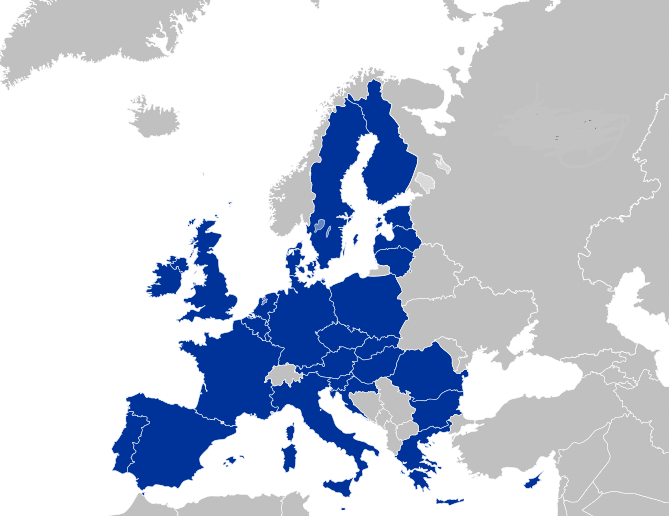
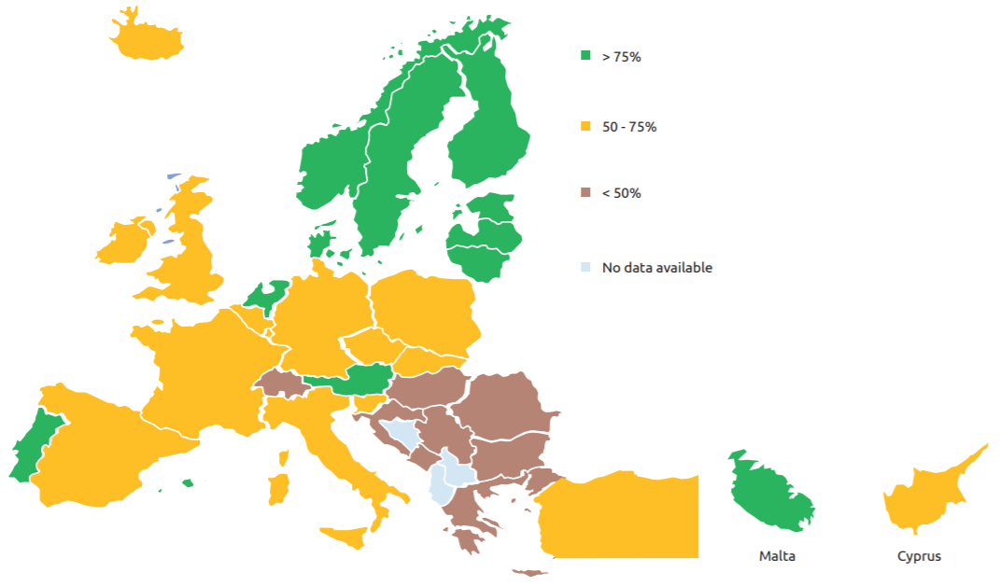
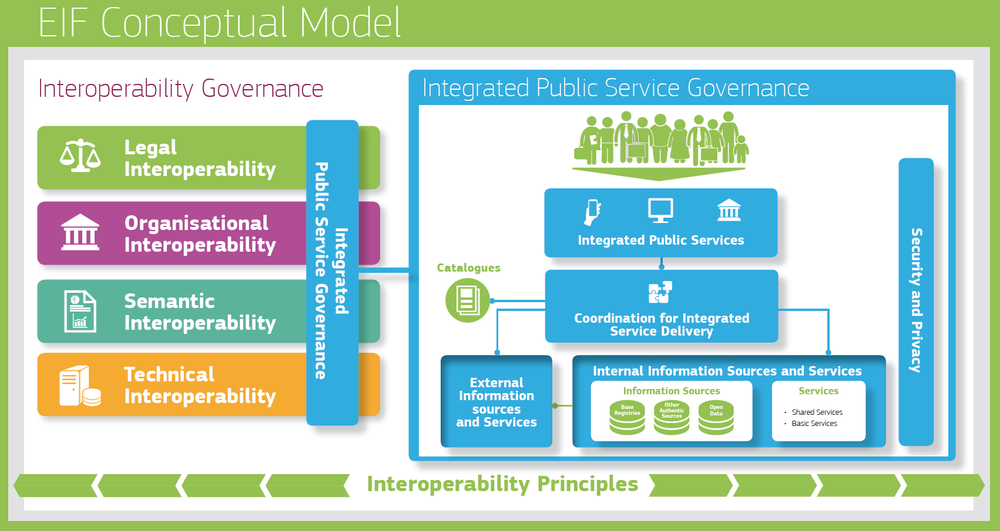

ISA2
Digital Government Factsheet 2019
European Union
Table of Contents


ISA2
Profile 3
Policies for Digital Government in the European Union 6
Legal Framework 28
Actors 36
Infrastructure 41
Internal Administration Services 43
Digital Government Services for Administrations 46
Digital Government Services for Citizens and Businesses 60
Profile
Basic data
Population: 512 379 225 (2018)
GDP at market prices: 15 869 095.6 million Euro (2018)
GDP growth rate: 1.9% (2018)
Inflation rate: 1.9% (2018)
Unemployment rate: 7% (2018)
General government gross debt (Percentage of GDP): 81.6% (2017)
General government deficit/surplus (Percentage of GDP): -1% (2017)
Area: 4 463 600 km²
Source: Eurostat (last update: 15 March 2019)
Source: Wikipedia
Digital Government Indicators
The following graphs present data for the latest Digital Government Indicators in the European Union. Statistical indicators in this section reflect those of Eurostat at the time the Edition is being prepared.
Digital Government State of Play
The graph below is the result of the latest eGovernment Benchmark report, which monitors the development of eGovernment in Europe, based on specific indicators. These indicators are clustered within four main top-level benchmarks:
- User Centricity – indicates to what extent (information about) a service is provided online and how this is perceived.
- Transparency – indicates to what extent governments are transparent regarding: i) their own responsibilities and performance, ii) the process of service delivery and iii) personal data involved.
- Cross-Border Mobility – indicates to what extent EU citizens and businesses can use online services in another country.
- Key Enablers – indicates the extent to which four technical pre-conditions are available online. There are: Identification (eID), Electronic documents (eDocuments), Authoritative Sources, and Digital Post. Digital Post refers to the possibility that governments communicate electronically-only with citizens or entrepreneurs through e.g. personal mailboxes or other digital mail solutions.
These top-level benchmarks are measured using a life-events (e.g. mystery shopping) approach. Eight life events are included in the overall eGovernment performance score. Four of these life events were measured in 2013, 2015 and 2017 and the other four were measured in 2012, 2014, 2016, and again in 2018. The life events measured in 2017 were Regular business operations, Moving, Owning and driving a car and Starting a small claims procedure. The life events measured in 2018 are Business start-up, Losing and finding a job, Family life and Studying.
Source: eGovernment Benchmark Report 2018 Insight Report
Policies for Digital Government in the European Union
EU policy and programmes supporting the digital transformation of public administrations
This section of the Digital Government factsheet presents the main policy instruments and programmes that the European Union has at its disposal to support the modernisation of the public administration, through a coordinated approach, a common vision of public services, the increased provision of digital public services, achieving cross-border interoperability and facilitating user centricity.
The use of digital technologies, if based on appropriate values and principles, can help place citizens at the heart of governments' digital transformation. In particular, if local and regional administrations, which are closest to citizens and local businesses, can fully embrace this transformation it would have a significant impact on people's lives across the EU, reduce the administrative burden and strengthen confidence in public authorities and institutions. As an ESPON study found, 91% of city services have improved as a result of digitalisation and 68% use the data gathered from the use of digitalised services to improve services or in decision-making processes.
On the political level, the main initiatives driving public sector modernisation are the Digital Single Market and the EU eGovernment Action Plan 2016-2020. Their visions and principles were confirmed in the Tallinn Ministerial Declaration on eGovernment. The Declaration (6 October 2017) and the European Council Conclusion (19 October 2017) represented the highest level of commitment of Member States to build a Digital Europe and to make “e-government and the deployment of new technologies, accessibility, one-stop government and the once-only principle, and a digitalised public sector […] key to transforming our societies and supporting the EU's four freedoms”.
The Declaration built on previous initiatives such as the Council of the EU Conclusions on the EU eGovernment Action Plan 2016-2020, and took note of the statement of national digital champions on eGovernment signed in Bratislava. All EU Member States and EFTA countries signed the Tallinn Ministerial Declaration on eGovernment, which confirmed their commitment to the vision laid out in the EU eGovernment Action Plan 2016-2020 and in the European Interoperability Framework. Thus, the overall vision remains to strive to be open, efficient and inclusive, providing borderless, interoperable, personalised, user-friendly, end-to-end digital public services to all citizens and businesses – at all levels of public administration.
The political objectives, at a high level, are reflected in the EU legal instruments, as is the case of the eIDAS Regulation, the Single Digital Gateway, or the Directive on the Re-use of Public Sector Information, which are detailed in the following section. Political goals are also reflected in legally non-binding initiatives (soft-policy) for which the Commission plays a key role in mobilising and engaging with Member States and stakeholders in pursuing an inclusive and citizen-centric digital transformation of public administrations and services. Both legally and non-legally binding policies represent short-term and long-term objectives and actions that Member States should take in order to develop eGovernment solutions in relevant policy domains.
Furthermore, within the annual European Semester process, the Commission and the Council publish Country Specific Recommendations, which often address the topics related to modernisation of public administration. The European Semester official documents are published online.
The EU also provides funding instruments available to Member States, such as the ESIF, CEF and ISA2 programmes, which are described in detail in the later part of this section. These funding instruments, together with freely reusable solutions, significantly contribute to the public sector modernisation at national and regional levels.
In addition to the strategies, policy instruments and the aforementioned funding programmes, the European Commission implements a number of legislative initiatives related to the modernisation of public sector, which are detailed in the subsequent Legal Framework section of this factsheet. Finally, the EU also offers other soft instruments to help the progress of the public sector modernisation, such as peer to peer help, the exchange of best practices via multiple platforms (such as Joinup, FUTURIUM, eGOV4EU, etc.), and practical guidance through the Quality of Public Administration Toolbox.
Digital Single Market Strategy for Europe
On 6 May 2015, the European Commission unveiled its detailed plans to create a strategy for implementing the Digital Single Market, thereby delivering on one of its top priorities.
The Digital Single Market Strategy has benefitted from input and dialogue with Member States, the European Parliament and stakeholders. It has a multi-annual scope and is focused on key interdependent actions that can only be taken at EU level. The actions have been chosen to have maximum impact, can be delivered during this Commission's mandate, and will be taken forward in line with Better Regulation principles. Each will be subject to appropriate consultation and impact assessment. The Digital Single Market Strategy is built on three pillars:
Better access for consumers and businesses to online goods and services across Europe – this requires the rapid removal of key differences between the online and offline worlds to break down barriers to cross-border online activity.
Creating the right conditions and level playing field for digital networks and services to flourish – this requires high-speed, secure and trustworthy infrastructures and content services, supported by the right regulatory conditions for investment, fair competition and a level playing field.
Maximising the growth potential of our European Digital Economy – this requires investment in ICT infrastructures and technologies such as Cloud computing and Big Data, and research and innovation to boost industrial competitiveness, as well as better public services, inclusiveness and skills.
The third priority, ‘Maximising the Growth Potential of our European Digital Economy’, is of particular relevance for the area of eGovernment, as it includes the following actions for the Commission:
Proposing a European free flow of data initiative to promote the free movement of data in the European Union and launching a European Cloud initiative covering certification of cloud services, the switching of cloud service providers and a ‘research cloud’.
Revising and extending the European Interoperability Framework, with the new European Interoperability Framework having been published on 23 March 2017.
Supporting an inclusive digital society where citizens have the right skills to seize the opportunities of the Internet and presenting a new eGovernment Action Plan (see below) for the period of 2016 – 2020 aiming to (i) modernise public administration, (ii) achieve the digital internal market to deliver public services across borders; and (iii) engage more with citizens and businesses in the design and the delivery of high quality services.
On 10 May 2017, the European Commission published the mid-term review of the Digital Single Market Strategy. By this date, the Commission had proposed all of the initiatives set out by the Digital Single Market Strategy. The review was done in order to ensure a timely delivery and effective implementation of the strategy. The mid-term review identified three main areas where further actions were necessary to ensure a fair, open and secure digital environment:
- Spurring the European data economy;
- Jointly tackling growing cybersecurity challenges;
- Promoting fairness and responsibility of online platforms.
EU eGovernment Action Plan 2016 - 2020
The European eGovernment Action Plan 2016 - 2020 was launched on 19 April 2016. The Digital Single Market Strategy for Europe announced its launch and defined its aim to remove existing digital barriers to the Digital Single Market and to prevent further fragmentation arising in the context of the modernisation of public administrations.
Ahead of the publication of the new EU eGovernment Action Plan, a paper on the 'Vision for Public Services' was published. The Vision for Public Services outlined the long-term vision for a modern and open public sector and the way public services may be delivered in an open government setting (enabled by ICT), i.e. how public services may be created and delivered seamlessly to any citizen and business at any moment.
The EU eGovernment Action Plan 2016 – 2020 aims to be the instrument to combine European, national and regional efforts and advance the modernisation of public administrations across the European Union. While Member States pursue their own strategies and activities, the current Action Plan, which is based on a shared long-term vision, sets out seven principles that forthcoming initiatives should observe in order to deliver significant benefits that eGovernment can bring to businesses, citizens and public administrations themselves. The achievement of these seven principles by the Member States is monitored and the results presented in the annual eGovernment Benchmark Report. The main seven principles guiding the eGovernment Action Plan and strongly supported by all stakeholders are:
Digital by Default: Public administrations should deliver services digitally (including machine readable information) as the preferred option (while still keeping other channels open for those who are disconnected by choice or necessity). In addition, public services should be delivered through a single contact point or a one-stop-shop and via different channels.
Once only principle: Public administrations should ensure that citizens and businesses supply the same information only once to a public administration. Public administration offices take action, if permitted to internally re-use this data, in due respect of data protection rules, so that no additional burden falls on citizens and businesses.
Inclusiveness and accessibility: Public administrations should design digital public services that are inclusive by default and cater for different needs such as those of the elderly and people with disabilities.
Openness & transparency: Public administrations should share information and data among each other and enable citizens and businesses to access control and correct their own data; enable users to monitor administrative processes that involve them; engage with and open up to stakeholders (such as businesses, researchers and non-profit organisations) in the design and delivery of services.
Cross-border by default: Public administrations should make relevant digital public services available across borders and prevent further fragmentation to arise, thereby facilitating mobility within the Single Market.
Interoperability by default: Public services should be designed to work seamlessly across the Single Market and across organisational silos, relying on the free movement of data and digital services in the European Union.
Trustworthiness & Security: All initiatives should go beyond mere compliance with the legal framework on personal data protection and privacy, and IT security, by integrating those elements in the design phase. These are important pre-conditions for increasing trust in and take-up of digital services.
The EU eGovernment Action Plan calls for the acceleration of the digital transformation of governments. At the heart of this urgency lies the potential of data; public administrations need to benefit from this, they need to become data-driven governments. Data exchange will help them to become more efficient and effective: opening up government data will help them create new services, jobs and growth, open data will allow them to engage with citizens in their decision-making process, and big data will allow them to make better informed decisions, follow compliance, predict issues, etc.
The Action Plan provides for a dynamic and flexible approach given the fast-changing environment. Beyond the actions identified in the Action Plan, further actions may be proposed either by the Commission or by stakeholders, including Member States. This is facilitated by an online stakeholder engagement platform, which was launched in June 2016.
The Action Plan identified 20 concrete actions to accelerate the implementation of existing legislation and the related take up of online public services, under the following policy priorities:
Modernising public administration with ICT, using key digital enablers
Public administrations need to transform their back offices, to rethink and redesign existing procedures and services, and open their data and services to other administrations, and, as far as possible, to businesses and civil society. Digital public services should build on shared and reusable solutions and services based on agreed standards and technical specifications in order to reduce their cost of development, their time to deploy and increase interoperability.
Enabling cross-border mobility with interoperable digital public services
Cross-border digital public services facilitate access to markets, increase confidence in and stimulate competition across the Single Market. Administrations should: help businesses to operate online across borders within the Single Market; simplify access to information under EU business and company laws; enable businesses to easily start doing business, expand and operate in other Member States through end-to-end public eServices.
Facilitating digital interaction between administrations and citizens/businesses for high-quality public services
The new digital environment offers opportunities to facilitate the interaction of citizens, business and non-governmental organisations with public administrations. There is a promising potential to deliver such high-quality public services, by stepping up the involvement of businesses and citizens as well as researchers in their design and delivery, and by ensuring feedback for improvement where necessary. This leads to reducing red tape, easing use, lowering delivery costs.
The first update to the EU eGovernment Action Plan 2016-2020, in the context of the Digital Single Market Midterm Review in May 2017, added five new actions to the Action Plan.
Main activities under the Action Plan involve:
Accelerating the up-take of eID under eIDAS to effectively support the implementation of the digital-by-default principle in the public sector as well as to enable the fully digital provision of cross-border services;
Adopt the Single Digital Gateway Regulation, including elements of the once-only-principle for cross-border services and benefitting from the results of the ongoing Large Scale Pilot TOOP;
Implementation of revised EIF to ensure cross-border interoperability;
Catalogue of ICT standards for procurement;
Call for the Commission services to digitally transform the EU administration processes;
Making the eJustice Portal a one-stop shop for information on European justice issues;
Establishing a single window for reporting purposes in maritime transport and digitalise transport eDocuments;
Accelerating the deployment and take-up of the INSPIRE Directive data infrastructure;
Completing the setup of the Electronic Exchange of Social Security Information;
Transforming the Commission's websites to support increasing user engagement and participation of citizens and businesses in EU programmes and policymaking.
Open Government
The EU eGovernment Action Plan is guided by the vision to make the public administrations and public institutions in the EU open, efficient and inclusive, providing borderless, personalised, user-friendly, end-to-end digital public services to all citizens and businesses in the EU by 2020.
Indeed, there is a paradigm shift, moving from eGovernment that focused on efficiency and effectiveness, towards a digital government approach, whereby digital is an integral part of governments' modernisation efforts. Therefore, it is no longer about efficiency and effectiveness only; digital government will also enable greater public value, good governance, more openness and transparency, greater accountability and trust.
The Open Government approach can facilitate this transformation, driven by opening up public data and services and facilitating collaboration for the design, production and delivery of public services. This requires optimising process flows, opening up public sector data and services and moving from a silo mentality to a coordinated and collaborative approach. Open Government is based on the principles of collaboration, transparency and participation, functioning within an open governance framework. It is also about making government processes and decisions open, in order to foster citizen participation and engagement.
Creation of joined-up government, through breaking the internal silos between administrations, by opening up data and services between administrative departments, can reduce cost and avoid duplication. Breaking the silos between public administrations across borders will increase their efficiency and facilitate the cross-border mobility of businesses and citizens.
Breaking the silos with stakeholders and eventually opening public sector data, using standards Application Interfaces (APIs), and services to third parties, in full compliance with the legal framework for the protection of personal data and for privacy, will allow them to reuse these data and services. This will enable the design of targeted - personalised, pro-active and location-based services, thus facilitating digital interaction between administrations and users. This ensures user-centricity of public services and fosters collaborative service creation.
Furthermore, by opening up to stakeholders in decision-making and encouraging eParticipation, public administrations will become more trustworthy and more accountable.
An open government will support ICT-enabled public sector innovation; improving the efficiency, effectiveness and quality of public services by introducing new processes, products, services and methods of delivery enabled by ICT. Indeed, while the basic administrative services remain the core of eGovernment, there is an emergence of many new types of every-day, location-based services that can be created by government or by businesses, civil society, stakeholders, etc. using the available open data, location data, as well as open services.
Local and Regional Dimension of the EU eGovernment Action Plan 2016-2020
Over 60% of decisions taken at the European level have a direct impact on municipalities, provinces, and regions and 70% to 80% of public investments in Europe are made by local and regional authorities. Those two figures alone are proof of the ever-increasing importance of European local and regional government in both our world’s economy and the life of our citizens.
The EU eGovernment Action Plan recognises that essential legislation is now in place and that many technological solutions have been developed and tested. Efforts therefore need to focus on ensuring implementation, so that citizens and businesses can really reap the benefits of the digital transformation. Local and regional administrations (LRAs) have an important role both in modernising administrations and services in areas of importance for society, and in taking responsibility for directly providing their residents with services shaped to meet expectations in an increasingly digitalised world. Because of their size and agility, they also serve as an excellent basis for innovation and thereby contribute to generating economic growth, by ensuring a business-friendly environment, enabling the flourishing of data-driven businesses or by encouraging innovation to the market due to their large purchasing power.
Current regional policy is delivered through cohesion funds through the European Structural and Investment Funds (ESIF) and includes 11 thematic objectives; two of these are highly relevant for eGovernment. (TO2 and TO11) (SEE ESIF section).
To support the LRAs, the Commission has prepared a guide to help them implement and find EU funding for eGovernment in line with the principles and priorities set out in the EU eGovernment Action Plan 2016-2020.
Cross-Border Regions
Cross-border regions, regions from at least two different Member States lying directly on the borders or adjacent to them, can tackle common challenges identified jointly in the border regions and exploit the untapped growth potential in border areas. In order to tackle the obstacles stemming from diverging national legislations, incompatible administrative processes, or lack of common territorial planning, DG REGIO is working on a Cross-Border Review, to highlight how cross-border regions could benefit from the cross-border digital public services and key digital enablers. For its part, seamless cross-border digital public services are important enablers of the Single Digital Market.
Once-Only Principle
The EU eGovernment Action Plan calls on public administrations to ensure that citizens and businesses supply the same information only once (Once-Only Principle or OOP) to a public administration for certain administrative procedures, if they so wish. Public administration offices take action, if permitted, to internally re-use this data, in due respect of data protection rules, so that no additional burden falls on citizens and businesses.
In the Tallinn Declaration, Member States committed to take steps to identify redundant administrative burden in public services and introduce once only options for citizens and businesses in digital public services by collaboration and data exchange across administrations at national, regional and local level as well as with other countries for cross-border digital public services.
The regulatory proposal for the cross-border application of the OOP is contained in the Single Digital Gateway Regulation.
In view of operationalisation of the OOP at EU level, the Commission has launched several initiatives related to the European Digital Single Market and two projects related to the OOP:
SCOOP4C focuses its efforts on the citizens’ dimension of the OOP. The overall aim of the project is to investigate, discuss, and disseminate how co-creation and co-production in public service provisioning for citizens can be achieved by implementing the once-only principle.
TOOP aims to explore and demonstrate the once-only principle across borders while focusing on data from businesses. Doing this, TOOP wants to enable better exchange of business-related data or documents with and between public administrations and reduce administrative burden for both businesses and public administrations.
User-Centricity
Member States have committed to making their public administrations user-centric in the design and delivery of digital public services (see: Tallinn Ministerial Declaration on eGovernment) and to ensure the consistent quality of user experience in digital public services as set out in the Annex User-centricity principles for design and delivery of digital public services of the declaration.
In order to support the implementation of the Tallinn Declaration - User-centricity principles and to put citizens truly at the heart of governments’ digital transformation, efforts should be emphasised on local and regional administrations that deliver most of the public services and that are often the main point of interaction between governments and citizens. For this, the Commission is proposing to cities and regions a Quality label representing the compliance with the Tallinn user-centricity principles.
For this action, a couple of workshops took place in Brussels with the participation of a wide set of stakeholders in April 2018 and May 2019.
The Quality Label may reflect undertaking some or many of the wide scope of activities already existing. For instance, many cities are experimenting with participatory budgeting (see Participatory Budgeting for Inclusive Smart Cities and Communities), participatory urban planning (see the Digital Transition Partnership's Action on Participatory urban planning'), co-creation and eParticipation (see H2020 ICT-enabled open government pilots) as well as other societal engagement tools (see CitizenCity), while others are focusing on personal data management (see the Digital Transition Partnership's Action on MyData) and preparing to be compliant with the General Data Protection Regulation, which came into force on 25 May 2018 (see Citizen Centric Approach to Data). Others again are focusing on reducing the administrative burden and implementing citizen-centric eGovernment services (see the Digital Transition Partnership's Action on 'Helping cities develop a user-centric eGovernment model'), while ensuring that nobody is left behind in the digital transformation of government (see the Digital Transition Partnership's Action on 'Digital Neighbourhood Instrument').
Digital Transition Partnership under the Urban Agenda for the EU
The Urban Agenda for the EU is an integrated and coordinated approach to deal with the urban dimension of EU and national policies and legislation. By focusing on concrete priority themes within dedicated Partnerships, the Urban Agenda seeks to improve the quality of life in urban areas.
Launched in 2016 with the Pact of Amsterdam, it represents a new multi-level working method promoting cooperation between Member States, cities, the European Commission and other stakeholders in order to stimulate growth, liveability and innovation in the cities of Europe and to identify and successfully tackle social challenges. It also focuses on the three pillars of EU policy making and implementation of Better regulation, Better funding and Better knowledge.
One of the priority themes identified is Digital Transition. In the Digital Transition Partnership, the creation of digital services to enhance the competitiveness of enterprises and improving the quality of life of people is at the core of the focus of the partnership. The European Commission (DG REGIO and DG CNECT), Estonia and the cities of Oulu (FI) and Sofia (BG) and further partners (Member States, cities and stakeholders) work together to develop an 'Urban Digital Transition' action plan.
A Digital Transition Action Plan was published in 2018, with actions looking into how to effectively implement the EU eGovernment Action Plan 2016-2020 at the local government level as well as proposing new actions at cities/urban areas to be proposed in the rolling EU eGovernment Action Plan. Other actions include an eGovernment performance measurement framework for urban authorities, with a focus on key deliverables. One of the horizontal themes to be addressed is data and standardisation. This action has been included in the eGovernment Action Plan (through the DSM Midterm Review).
The Digital Transition Action plan aims to achieve the following objectives with dedicated actions for each one:
Generalise and diffuse digital skills to everybody:
- Action 1: Mainstreaming EU Digital Competence Framework for citizens into daily use;
- Action 2: Digital Neighbourhood Instrument; and
- Action 3: Capacity-Building and Spreading of Pilots in Regions and Cities.
Enable and implement citizen-centric e-government:
- Action 4: Helping cities develop a user-centric eGovernment model; and
- Action 5: Developing the Digital Economy and Society Index (DESI) at local level (DESI local).
Provide value through free and fair access to open/public/personal data:
- Action 6: Build a data taxonomy at a European level;
- Action 7: Access and reuse of private sector data of general interest by the public authorities;
- Action 8: Specify and monitoring of standardised Planned Land Use data for formal and informal urban planning participation processes; and
- Action 9: MyData in digital transition – Elaboration of a European roadmap on ‘mydata’.
Accelerate and adopt digital emerging technologies in cities:
- Action 10: Building innovation and dissemination accelerator;
- Action 11: Support agile experimentation of emerging digital technologies; and
- Action 12: Implementing the digital framework for emerging technologies within the digital infrastructure.
Adopt business model thinking to drive urban digital transition:
- Action 13: Co-creating a business model approach for cities; and
- Action 14: Development of 5G regulation to enable local micro-operators in cities.
Strengthen the ability for cities to act within the digital transition:
- Action 15: Implementing Digital transition in European Cities.
Digital transition partnership is actively seeking partners and stakeholders to be involved in further development and implementation of the action plan.
The Tallinn Ministerial Declaration on eGovernment
The Tallinn Ministerial Declaration on eGovernment from 2017, or the Tallinn Declaration, followed the Malmö Declaration signed in 2009 and the launch of the EU eGovernment Action Plan 2016-2020, which recognised that service-oriented, citizen-centric, reliable and innovative government at all levels is essential to develop a dynamic, and productive European society. Since 2009, several key milestones have been achieved, such as eProcurement, the deployment of key cross border services funded by the Connecting Europe Facility programme, and electronic identification (eID).
The Tallinn Declaration provided an important impetus for Member States and the Commission, both collectively and individually, to continue to invest in accelerating the modernisation of the public sector.
The Declaration re-enforced Member States’ commitment to the EU eGovernment Action Plan 2016-2020. The Tallinn Declaration was signed by all Member States at the ministerial meeting on 6 October 2017, during Estonia’s presidency of the Council. By signing the ‘Tallinn Declaration’, Member States pledged that by 2022 they will strive to:
Implement the principles of digital-by-default, inclusiveness and accessibility;
Implement the user-centricity principles for design and delivery of digital public services, as detailed in the Annex of the declaration;
Implement the once only principle for key public services, at least as an option, for citizens and business;
Implement the principle of trustworthiness and security by ensuring that the needs of security and privacy are taken into consideration when designing public services and ICT solutions and increasing the uptake of national eID schemes;
Implement the principle of interoperability by default by designing national interoperability frameworks in line with the EIF.
Implement the principle of openness and transparency by making it possible for citizens and businesses to better manage their personal data held by public administrations.
The Declaration detailed specific action lines for each principle of the EU eGovernment Action Plan that the signatories shall implement by 2022.
Interoperability Action Plan supporting the implementation of the revised European Interoperability Framework
The revised European Interoperability Framework was adopted on 23 March 2017. The framework provided specific guidance on how to set up interoperable digital public services. The EIF is maintained under the ISA² Programme. It offered public administrations a total of 47 concrete recommendations on how to improve governance of their interoperability activities, establish cross-organisational relationships, streamline processes supporting end-to-end digital services, and ensure that both existing and new legislation do not compromise interoperability efforts. The new conceptual model of the revised EIF Framework is illustrated below.
The revised EIF was accompanied by the Interoperability Action Plan, which outlined priorities that should support the implementation of the EIF. The Action Plan was made up of a total of 22 actions, which fell under five focus areas:
- Ensure governance, coordination and sharing of interoperability initiatives;
- Develop interoperability solutions to foster collaboration between organisations;
- Engagement of stakeholders and raise awareness of interoperability;
- Develop, maintain and promote key interoperability enablers;
- Develop, improve and promote supporting instruments for interoperability.
Source: ISA2 programme
European Commission Digital Strategy
By 2022, the European Commission aims to become a digitally transformed, user-focused and data-driven administration. The European Commission’s challenge in IT is two-fold: (i) the design, development and deployment of the next generation of mission-critical digital solutions; (ii) the modernisation of its legacy systems.
For this reason, the College adopted the European Commission Digital Strategy on 21 November 2018, for the benefit of the Commission and each staff member. The principles of this Strategy were based on the EU eGovernment Action Plan, the European Interoperability Framework and the Tallinn Declaration.
The following are the objectives:
To support the Commission’s political priorities and activities with secure, state-of-the-art, digital solutions;
To provide the Commission with high quality, trusted, borderless, digital public services, implementing its EU-wide policies, facilitating the free flow of data and boosting the digital single market;
To enable the transformation of the Commission and maximise its role in policy-shaping by exploiting the potential of the Commission’s data;
To make the Commission a world-class ‘open administration’, a collaborative, innovative and agile institution in the service of the European Union;
To ensure that the Commission's IT assets are secure, that unauthorised access or use of information is prevented and that the Institution is protected from cyberattacks;
To guarantee the resilience of the Commission by ensuring the security, efficiency and effectiveness of its digital infrastructure and of its portfolio of digital services.
These objectives of the Digital Commission were based on actions towards the following three main foundations: (i) an effective, efficient and transparent Commission; (ii) borderless digital public services; and (iii) cybersecurity at the Commission.
Building a European Data Economy
On 10 January 2017, the European Commission published a new Communication on Building a European Data Economy. The Communication looked at proven or potential blockages to the free movement of data and presents options to remove unjustified and or disproportionate data location restrictions in the EU.
The Communication also considered the barriers around access to and transfer of non-personal machine-generated data, data liability, as well as issues related to the portability of non-personal data, interoperability and standards. Once the proposal for a review of the Directive on the re-use of public sector information (PSI Directive) is adopted, the scope will be enlarged to include more types of data eligible for re-use.
The Communication was accompanied by a Staff Working Document.
Digitising European Industry
On 19 April 2016, the European Commission presented a set of measures to Digitise European Industry. The measures to Digitise European Industry were intended to help both large and small companies, researchers and public authorities, to make the most of new technologies. They were formulated to link up national and regional initiatives and boost investment through strategic partnerships and networks.
The purpose of this Communication was to reinforce the EU's competitiveness in digital technologies and to ensure that every industry in Europe, in whichever sector, wherever situated, and no matter the size, can fully benefit from digital innovations.
Facilitated by a dynamic framework for coordination and experience sharing between public and private initiatives at EU, national and regional level, the proposed actions are expected to mobilise close to EUR 50 billion of public and private investment in the next five years.
European Cloud Initiative
On 19 April 2016, the European Commission presented the European Cloud Initiative, its blueprint for cloud-based services and world-class data infrastructure to ensure that scientists, businesses and public services reap benefits of the Big Data revolution. This initiative was part of a package of measures to strengthen Europe's position in data-driven innovation, to improve competitiveness and cohesion and to help create a Digital Single Market.
By bolstering and interconnecting existing research infrastructure, the Commission planned to create a new European Open Science Cloud that offered Europe's 1.7 million researchers and 70 million science and technology professionals a virtual environment to store, share and re-use their data across disciplines and borders.
This will be underpinned by the European Data Infrastructure, deploying the high-bandwidth networks, large scale storage facilities and super-computer capacity necessary to effectively access and process large datasets stored in the cloud.
The European Cloud Initiative will make it easier for researchers and innovators to access and re-use data and will reduce the cost of data storage and high-performance analysis. This world-class infrastructure will ensure that Europe participates in the global race for high performance computing in line with its economic and knowledge potential. The user base will over time be enlarged from the initial scientific community to the public sector and industry.
The user base of the European Open Science Cloud and of the European Data Infrastructure will be widened to the public sector, for example through large-scale pilots involving eGovernment and public sector stakeholders and by progressively opening the European Data Infrastructure to users from industry and the public sector to achieve a European dimension.
As the public sector generates massive amounts of data (e.g. Copernicus Earth observation, INSPIRE location data) and needs larger computing capacity (e.g. for real time traffic and travel information systems, for smart city applications or for policy modelling), it will benefit from economies of scale, flexibility and continuity.
As a result, the public will thus benefit from cheaper, faster, better and interconnected public services and from better policy making based on affordable and secure computing- and data-intensive services. Moreover, the European Open Science Cloud will ensure that public data is fully discoverable, accessible and exploitable by scientists, policy makers and businesses. Lessons learnt will provide concrete guidance for the adoption of cloud-based services by public administrations across Europe.
ICT Standardisation Priorities for the Digital Single Market
The Commission adopted on 19 April 2016 a Communication setting up ICT standardisation priorities for the Digital Single Market as part of the package on Digitising European Industry. The initiative aimed to re-energise the standard-setting system in Europe as a step towards industrial global leadership and digital innovation. The results of this plan were intended to ensure that European standards would be in place quickly enough to allow future devices to connect smoothly across the Digital Single Market.
The Commission identified the following priority areas: 5G communications, cloud computing, the internet of things (IoT), (big) data technologies and cybersecurity. These are the essential technology building blocks of the Digital Single Market. A regular review of the priorities was planned so as to respond to changes in technology and society.
Stronger European leadership in standard setting in these areas should increase competitiveness and help European innovations to better access the global market. The EU plans to support participation of European experts in international standardisation decisions, to help ensure European ideas contribute to global solutions.
Certain aspects of this priority plan also complemented and developed specific public sector requirements identified in the revised version of the European Interoperability Framework for European Public Services, taking on board the standardisation needs of the European public administrations.
Furthermore, as part of the eGovernment Action Plan, a catalogue of services for ICT procurement was put together. The European Catalogue will contribute to making procured solutions more interoperable and towards creating a more transparent public procurement market. The catalogue will serve as a one-stop-shop for procurers on guidelines for procurement, including on vendor lock-in, on the use of standards, and a lifecycle costing scheme that accounts for the often-neglected interoperability costs. It will streamline the numerous guidelines and provide for a platform of exchange and dissemination.
Open Source Strategy 2014-2017
The European Commission reviewed its internal Open Source Software strategy. It addressed the procurement of open source software and the Commission's contribution to open source software projects. The strategy provided for more software developed within the Commission to be published as open source.
In March 2015, the renewed strategy for internal use of open source software in the Commission was published.
Other relevant EU initiatives
eProcurement refers to the use of electronic communications by public sector organisations when buying supplies and services or tendering public works.
Increasing the use of eProcurement in Europe can generate significant savings for European taxpayers. These savings would maximise the efficiency of public spending in the current context of fiscal constraints. eProcurement can also provide a new source of economic growth and jobs, including by facilitating access to public procurement contracts by SMEs.
In April 2012, the European Commission adopted Communication COM(2012) 179 setting out a strategy to make the use of eProcurement the rule in the EU by mid-2016.
In June 2013, the European Commission adopted Communication COM(2013) 453 that identified the state of implementation of end-to-end eProcurement, i.e. the process from the electronic publication of notices to electronic payment, in the EU, as foreseen by the 2012 Communication ‘A Strategy for eProcurement’.
Furthermore, as part of the eGovernment Action Plan 2016-2020, the Commission will support Member States’ transition towards end-to-end eProcurement, use of contract registers and interoperable eSignatures. The objective of the eGovernment Action Plan was that by 2018, companies anywhere in the EU could bid for public procurement contracts electronically.
European Cloud Computing Strategy
In September 2012, the European Commission adopted a strategy for Unleashing the Potential of Cloud Computing in Europe. The strategy outlined actions to deliver a net gain of 2.5 million new European jobs, and an annual boost of EUR 160 billion to the European Union GDP (around 1%), by 2020. The strategy was designed to speed up and increase the use of cloud computing across all economic sectors. This strategy was the result of an analysis of the overall policy, regulatory and technology landscapes and of a wide consultation with stakeholders, to identify ways to maximise the potential offered by the cloud. This document set out the most important and urgent additional actions. It represented a political commitment of the Commission and served as a call on all stakeholders to participate in implementing these actions. Dedicated working groups were created to work on this.
On 27 December 2014, the European Commission published its first Call for Tender for a Cloud Service.
Cloud services offer benefits in terms of infrastructure elasticity and scalability while favouring the pay-per-use model against upfront capital investments. The Cloud will enable the Commission to follow the ceaseless pace of today's technological race among infrastructure providers where costs of storage, bandwidth and computing power are decreasing day by day while enabling at the same time innovative solutions for new challenges such as Big Data.
Depending on their security and data qualification, information systems can be deployed either in a Private Cloud operated for the Commission and EU institutions only, or in the Public Cloud operated for external customers too. This hybrid approach allows the Commission to get the most effective solution under different circumstances to meet our changing needs.
The European Multi Stakeholder Platform (MSP) on ICT standardisation was set up at the end of 2011. Based on a European Commission Decision 2011/EC 349/04 to advice on matters related to the implementation of ICT standardisation policies, it dealt with:
Potential future ICT standardisation needs in support of European legislation, policies and public procurement;
Technical specifications for public procurements, developed by global ICT standards-developing organisations;
Cooperation between ICT standards-setting organisations;
The Rolling Plan, which provides a multi-annual overview of the needs for preliminary or complementary ICT standardisation activities in support of the EU policy activities.
The MSP is composed of representatives of national authorities from EU Member States & EFTA countries, by the European and international ICT standardisation bodies, and by stakeholder organisations that represent industry, small and medium-sized enterprises and consumers. It is co-chaired by the European Commission Directorates General GROWTH, and CONNECT. It meets four times per year.
Common Assessment Model Standards and Specifications (CAMSS)
CAMSS aims at promoting collaboration between public administrations through a Common Assessment Method for Standards and Specifications.
This helps to expand interoperability between EU Member States through the sharing of information and knowledge, and the alignment of national processes by using CAMSS. It also aims to speed up the assessment processes, reduce their cost throughout European public administrations and avoid ICT vendor specific lock-in.
The main objective of CAMSS is to become the method of reference for the assessment of technical specifications and standards in the field of ICT.
Beneficiaries of CAMSS are public administrations in the Member States and EU institutions, standardisation bodies and the IT services industry. For these beneficiaries, CAMSS aims at providing a best practice (common) assessment method and guidance for the assessment of ICT technical specification or standards when defining ICT architectures and establishing European public services.
The use of the CAMSS by Member States helps to promote transparency in the choice of eGovernment solutions and standards and also lead to a more efficient use of public funds via sharing and reuse among eGovernment projects. The CAMSS toolkit consists of:
A documented reference assessment process;
A set of quality requirements (criteria);
Assessment tools: online and offline (also in open source);
The collection of assessments performed with the method;
A list of standards which compiles standards and specifications (recommended and mandatory) that are included in national lists.
CAMSS is supported through ISA2 Action 2016.27.
Interoperability Maturity Assessment of a Public Service (IMAPS)
Nowadays, public administrations can no longer exist in isolation. They must interact with many other administrative bodies, often across borders and sectors, and share and utilise services, data, and business processes with them. In other words, they must be interoperable.
The IMAPS (Interoperability Maturity Assessment of a Public Service) is a self-assessment tool that will evaluate and ultimately improve European public service interoperability maturity. It currently consists of:
A compact and user-friendly self-assessment through the IMAPS online survey. This 30-minute questionnaire looks at the context of the public service, how the service is delivered, how it consumes existing services and how it is managed.
On completion of the IMAPS, the Results Output offers tailored recommendations and confidential improvement guidance.
The IMAPS is designed to help public service owners (i.e. those in charge of key services such as online tax filing, online business registration, online change of address, etc. – no matter at what government level: national, regional, local, international) evaluate, improve and consider all key interoperability aspects of their public service. The IMM distinguishes between three different domains of interoperability:
Service Delivery – Providing end-users accessibility to the public service;
Service Consumption – Consumption of reusable services from other public administrations and businesses. This can include the consumption of functionalities, base registry information and security services;
Service Management – Controlling and monitoring the process flow related to external service interactions from trigger to outcome.
EU Catalogue of Standards for ICT Procurement
Under the ISA2 programme, the European Commission is creating a Catalogue of Standards of ICT Procurement. The European Catalogue will contribute to ensure that procured solutions are interoperable and help to make the ICT procurement market more transparent. The Catalogue will offer a one-stop-shop for procurers on guidelines for procurement, including on vendor lock-in, on the use of standards, and a lifecycle costing scheme that accounts for the often-neglected interoperability costs. It will streamline the numerous guidelines and provide for a platform of exchange and dissemination.
At the present moment the Catalogue is a draft version, a concept demonstrator. The first priority, under the ISA2 programme, is to finalise the needs. The prototype proposes needs in four domains: cloud computing, transport systems, eGovernment, and smart and efficient use of energy. Surveys and targeted workshops were organised to finalise the needs in procurement by the end of 2017.
In February 2017, the European Commission launched an open public consultation to improve the draft contents of the Catalogue. The consultation aimed at collecting feedback on the contents, and at receiving advices on possible catalogue structure improvements.
ISA² Core Vocabularies
Core Vocabularies are simplified, reusable, and extensible data models that capture the fundamental characteristics of an entity, such as a person or a public organisation, in a context-neutral manner.
Public administrations can use and extend the Core Vocabularies in the following contexts:
Information exchange between systems: the Core Vocabularies can become the basis of a context-specific data model used to exchange data among existing information systems.
Data integration: the Core Vocabularies can be used to integrate data that comes from disparate data sources.
Data publishing: the Core Vocabularies can be used as the foundation of a common export format for data in base registries like cadastres, business registers and service portals.
Development of new systems: the Core Vocabularies can be used as a default starting point for designing the conceptual and logical data models in newly developed information systems.
ISA² has developed the Core Vocabularies for public administrations in an open process with the active involvement of the SEMIC and Catalogue of Service action stakeholders.
The Core Vocabularies are:
Core Person: captures the fundamental characteristics of a person, e.g. name, gender, date of birth, location.
Core Business: describes legal entities (e.g. its identifier, activities) which are created through a formal registration process, typically in a national or regional register.
Core Location: about the main characteristics of a location, represented as an address, a geographic name or geometry.
Core Criterion and Core Evidence: describes the principles and the means that a private entity must fulfil to become eligible or qualified to perform public services. A criterion is a rule or a principle that is used to judge, evaluate or test something. An evidence is a means to prove a criterion.
Core Public Organisation: describes public organisations in the European Union.
Core Public Service Vocabulary (Application Profile) (CPSV-AP): provides a common data model for describing public services offered by public administrations. It standardises the semantics of personal milestones, including having a child, beginning education, looking for a new job, as well as professional changes such as starting or financing a company, hiring an employee. The descriptions will make data on these events structured, easier to capture and machine-readable.
Main EU funding programmes
The Connecting Europe Facility (CEF)
On 29 June 2011, the European Commission adopted a proposal for the next Multi-Annual Financial Framework for the period 2014-2020. In this Framework, a new integrated investment instrument was proposed to improve Europe’s transport, energy and digital networks: The Connecting Europe Facility (CEF). Well-functioning infrastructures are a key condition to achieve the Europe 2020 targets. By investing in the three main networks to make them smart, sustainable and fully interconnected, Europe’s competitiveness will be boosted and new jobs will be created.
Article 5 of the CEF Regulation allocated to the Digital sector an overall envelope of EUR 1.14 billion, for connectivity actions and the deployment of Digital Service Infrastructures (DSIs) delivering networked cross-border services for citizens, businesses and public administrations. These projects contributed to:
Improvements in the competitiveness of the European economy;
Promotion of the interconnection and interoperability of national, regional and local networks;
Access to such networks, thus supporting the development of a Digital Single Market.
The Connectivity component of the programme sought to contribute to the achievement of the Digital Agenda targets of all European households having access to internet connections of 30 Megabits per Second by 2020, and of 50% of households subscribing to internet connections above 100 Megabits per Second by 2020.
In view of these targets, CEF aims at facilitating an efficient flow of private and public investments to stimulate the deployment and modernisation of broadband networks. At least one third of the broadband projects financially supported under CEF aims at speeds above 100Mbps.
The Digital Service Infrastructures (DSIs) facilitates the cross-border and cross-sector interaction between European public administrations. This, in turn, enables the provision of essential services for businesses and citizens in areas as diverse as electronic identification and procurement, and interoperable health services.
Projects are focused on deploying a relatively small number of trans-European infrastructures based upon mature technical and organisational solutions and aimed at supporting exchanges and collaboration with and within the public sector, across the EU.
The DSIs also entail the roll-out of the CEF building blocks that capitalised on the solutions for interoperability developed through Large Scale Pilots (such as eID, eProcurement, electronic Healthcare records, eJustice).
Horizon 2020
Horizon 2020 is an EU Research and Innovation programme with nearly EUR 80 billion of funding available over seven years (2014 to 2020).
Horizon 2020 is the financial instrument implementing the Innovation Union, a Europe 2020 flagship initiative aimed at securing Europe's global competitiveness.
Seen as a means to drive economic growth and create jobs, Horizon 2020 has the political backing of Europe’s leaders and the Members of the European Parliament. They agreed that research is an investment in the future of Europe, and so put it at the heart of the EU’s blueprint for smart, sustainable and inclusive growth and jobs.
By coupling research and innovation, Horizon 2020 is helping to achieve this with its emphasis on excellent science, industrial leadership and tackling societal challenges. The goal is to ensure Europe produces world-class science, removes barriers to innovation and makes it easier for the public and private sectors to work together in delivering innovation. Horizon 2020 is open to everyone, with a simple structure that reduces red tape and time so participants can focus on what is really important. This approach makes sure new projects get off the ground quickly – and achieve results faster.
Horizon 2020 reflects the policy priorities of the Europe 2020 strategy and addresses major concerns shared by citizens in Europe and elsewhere. Horizon 2020 covers seven different domains of actions called ‘Societal Challenges’. The Societal Challenge 6 ‘Europe in a changing world – Inclusive, innovative and reflective societies’ deals with a series of societal issues and, among others, addresses directly problems related to eGovernment and modernisation of public administrations. The research and innovation actions in this area for 2014 and 2015 focused on demonstrating the open and collaborative government concept through the following topics:
Research into using emerging technologies in public sector;
Pilots on open participation of the youth in decision-making processes;
ICT-enabled open government; innovation actions for mobile, personalised public services and transparency of public administrations;
Design and creation of innovative applications by SMEs, in order to foster the delivery of mobile public services (eGovernment apps) for local and regional public authorities.
The Work Programme 2016-2017 supported eGovernment / ICT-enabled public sector innovation related activities through the following topics:
Applied co-creation to deliver public services;
Co-creation between public administrations: once-only principle;
Policy-development in the age of big data: data-driven policy making, policy modelling and policy implementation;
Understanding the transformation of European public administrations;
New business models for inclusive, innovative and reflective societies.
All of the Horizon 2020 funded projects can be accessed on their main database.
The Work Programme 2018-2020 continues to support ICT-enabled public sector innovation in Europe in a number of ways, addressing the following topics:
The challenge of migration integration through ICT-enabled solutions;
Transformative impact of disruptive technologies in public services;
New forms of delivering public goods and inclusive public services;
Pilot on using the European Cloud Infrastructure for public administrations;
Digital Solutions and e-tools to modernise the CAP (Common Agricultural Policy) (jointly with Societal Challenge 2).
All Horizon 2020 funded projects can be accessed on their main database on CORDIS.
CORDIS, managed by the Publications Office of the European Union, is the Community Research and Development Information Service. It is the European Commission's primary public repository and portal to disseminate information on all EU-funded research projects and their results in the broadest sense. CORDIS content dates back to the origin of the service in 1990 and the website has been online since 1994.
European Structural and Investment Funds (ESIF)
The European Structural and Investment Funds also provide investments in the field of eGovernment in less favoured regions, as this is seen as a strategic component of their economic and social development. As stipulated in Article 9 of the Common Provisions Regulation, which lays down the common rules applicable to ESIF, each ESIF must also support eleven thematic objectives (TO), including thematic objectives 2 and 11 which are particularly relevant to the modernisation of public administrations.
Thematic Objective 2 (TO2): Aims to enhance access to, and use and quality of, information and communication technologies. Between 2014 and 2020, around EUR 3.4 billion will support eGovernment services and applications and around EUR1 billion will support the access to public sector information
The main specific characteristics describing TO2 are:
Extending broadband deployment and the roll-out of high-speed networks;
Developing ICT products and services, eCommerce and enhancing demand for ICT;
Strengthening ICT applications for eGovernment, eLearning, eInclusion and eHealth;
Enhancing the accessibility, use and quality of information and communication technologies, through the development of digital literacy, investment in eInclusion, eSkills and related entrepreneurial skill.
ESIF Thematic Objective 11 (TO11), as set by the European Commission, aims to enhance institutional capacity and to support the efficiency of public administrations. In the current programming period of 2014-2020, overall EUR 4.2 billion will be spent on administrative capacity building.
The European Social Fund (ESF) foresees two investment priorities under TO11:
Investment in institutional capacity and in the efficiency of public administration and public services at the national, regional and local levels with a view to reforms, better regulation and good governance (Article 3(d) (i) ESF Regulation);
Capacity building for all stakeholders delivering education, lifelong learning, training and employment and social policies, including through sectorial and territorial pacts to mobilise in order to reform at the national, regional and local levels (Article 3(d) (ii) ESF Regulation).
Structural Reform Support Programme (and Service)
The Union has identified the implementation of structural reforms among its policy priorities to set the recovery on a sustainable path, unlock the growth potential to strengthen the adjustment capacity, and support the process of convergence.
Yet the reforms must be well-designed, legislated and effectively implemented, and therefore it became necessary to establish a Structural Reform Support Programme with the objective of strengthening the overall capacity of Member States to prepare and implement growth-enhancing institutional, structural and administrative reforms, including through assistance for the efficient and effective use of Union funds, to the extent that these Member States request support from the Union for this purpose.
In May 2017, the Council approved a EUR 142.8 million programme to help Member States implement structural reforms. The intention is to provide for an extension – under the auspices of the Structural Reform Support Service (SRSS) – of technical support to all Member States requesting it.
ISA² (Interoperability Solutions for European Public Administrations) programme
On 25 November 2015, the ISA², the follow-up programme to ISA was officially adopted by the European Parliament and the Council of the European Union.
ISA (Interoperability Solutions for European Public Administrations) provided a framework that allowed Member States to work together to create efficient and effective electronic cross-border and cross-sector public services. The programme supported and maintained the European Interoperability Framework (EIF) and contained actions on:
Trusted information exchange;
Interoperability architecture;
Assessment of the ICT implications of new EU legislation;
Accompanying measures, such as communication activities, evaluation of progress in implementing the programme, and, among other measures, the new action on the ISA collaboration platform, which resulted in the creation of the Joinup portal focusing on eGovernment, semantic interoperability and Open Source Software (OSS).
The follow-up programme, ISA², covers the period 2016 - 2020 with a financial envelope of EUR 131 million. This programme supports the development of interoperable digital solutions, which will be available to all interested public administrations in Europe.
The main beneficiaries of ISA² are public administrators at EU, national, regional and local level (direct beneficiaries), as well as citizens and businesses (indirect beneficiaries).
What is new in ISA²?
The new programme builds strongly on its predecessor, while also bringing a handful of new elements, such as:
A focus on the link between Public Administrations and businesses and citizens;
Covering all levels of administration;
An essential contribution to the Digital Single Market strategy;
The goal of increased synergies with relevant EC initiatives;
The adoption of a holistic approach to interoperability with the responsibility for European Interoperability Strategy (EIS), the European Interoperability Framework (EIF), the European Interoperability Reference Architecture (EIRA) and the European Interoperability Cartography (EIC).
Justice Programme
This programme will contribute to the further development of a European area of justice based on mutual recognition and mutual trust. The Justice Programme provides dedicated calls for eJustice projects.
Monitoring mechanisms
In order to monitor countries’ progress towards modernisation of public administration, especially the advancement of eGovernment, the European Commission publishes annually the eGovernment Benchmark Report, which overlooks the state-of-play of eGovernment across Europe. Indicators on certain aspects of eGovernment can also be found in the yearly published country-specific Digital Economy and Society Index (DESI) reports, in Europe’s Digital Progress Reports (EDPR) and the Digital Government factsheets which are updated in the frame of the NIFO observatory.
The revised European Interoperability Framework (EIF) was introduced in 2017, accompanied by the Interoperability Action Plan (IAP). The IAP guides the EIF implementation and it focuses on ensuring governance, coordinating and sharing interoperability initiatives. The monitoring and evaluation activities are conducted within the remit of the NIFO observatory as from 2019. Additionally, implementation of several initiatives is monitored on the Joinup platform and other observatories.
eGovernment Benchmark Report
The eGovernment Benchmark Report presents the results of the assessment of eGovernment services made according to the eGovernment Benchmark Framework in 34 countries (EU Member States, Iceland, Norway, Montenegro, Republic of Serbia, Switzerland and Turkey). The assessment covers the priority areas of the eGovernment Action Plan. Each priority is measured by one or more indicators, included in the so-called top-level benchmarks (User-centric Government, Transparent Government, Cross-border Mobility and Key Enablers).
Mystery Shoppers are trained and briefed to observe, experience and measure public service processes related to life events, covering most common domains of public services, representative for businesses and citizens. A complete measurement of all life events takes two years. Regular business operations, moving locations, car ownership and small claims procedures are measured in odd years while starting up a business, losing and finding a job, studying and family life are measured in even years.
Digital Economy and Society Index
The Digital Economy and Society Index (DESI) is a composite index that summarises relevant indicators on Europe’s digital performance and tracks the evolution of EU Member States in digital competitiveness. The Commission publishes a general DESI report as well as individual country reports. The findings are based on various domains:
Broadband market development;
Digital inclusion and skills;
Use of Internet services by citizens;
Integration of digital technology;
Trends in European digital public services;
The EU ICT sector and R&D performance.
Legal Framework
Specific legislation on digital government
Proposal for a Regulation of the European Parliament and of the Council Establishing the Digital Europe Programme for the Period 2021-2027
The EU is setting up a new funding programme, Digital Europe, which will be in place from 2021 until 2027, to support the digital transformation of Europe's societies and economies. The programme aims to further develop the digital single market and promote the uptake of digital technologies in both the public and private sectors.
The Digital Europe programme will provide funding of a total of EUR 9.2 billion (the sum pending approval of Member States) for projects in five areas: supercomputing, artificial intelligence, cybersecurity, advanced digital skills, and ensuring wide use of digital technologies across the economy and society.
Key enablers
Access to public information
Directive 2013/37/EU of the European Parliament and of the Council of 26 June 2013, on the Re-use of Public Sector Information
Directive 2013/37/EU amended Directive 2003/98/EC of the European Parliament and of the Council of 17 November 2003, on the re-use of public sector information that set out a framework for the conditions of its reuse and aims to ensure equal treatment for commercial editors within the internal market. Public sector organisations authorising this type of reuse continue to hold copyright and related rights. They are, however, invited to exercise their copyrights in a way that facilitates re-use.
Directive 2003/98/EC laid down a clear obligation for Member States to make all documents re-usable unless access was restricted or excluded under national rules on access to documents and subject to the other exceptions laid down in this Directive. The Directive did not seek to define or to change access regimes in Member States, which remain their responsibility. Directive 2013/37/EU extended the scope of Directive 2003/98/EC to libraries, including university libraries, museums and archives.
In 2017, in line with the mid-term review of the Digital Single Market strategy, the Commission announced the review of the PSI Directive. The Commission performed a public consultation between 12 September 2017 and 12 December 2017 to evaluate the implementation of the PSI Directive and to get feedback on how to improve accessibility and re-use of public and publicly funded data as well as on access to privately held data of public interest. A legislative proposal was announced on 25 April 2018, for the PSI Directive to become the new Directive on Open Data and Public Sector Information (PSI). Once the proposal for a review of the Directive on the re-use of public sector information (PSI Directive) is adopted, the scope will be enlarged to include more types of data eligible for re-use.
Regulation (EU) 2018/1724 Establishing a Single Digital Gateway to Provide Access to Information, to Procedures, and to Assistance and Problem-Solving Services
On 27 September 2018, the Council adopted a regulation setting up a single digital gateway. The new gateway will provide access to online information and procedures, assistance and problem-solving services to citizens and businesses.
The Single Digital Gateway will address the current fragmentation and information gaps by completing, improving and linking up relevant EU and national-level online information, assistance services and procedures in a user-friendly way. The aim is to provide businesses and citizens with high quality, comprehensive information, effective assistance and problem-solving services and efficient compliance procedures regarding EU and national rules applicable to citizens and businesses when they want to do business and/or to travel to, buy from, work, study or reside in another Member State. The gateway will be based on a user interface that would search the best service package for any query a user may have.
The Single Digital Gateway Regulation introduces (Article 12) the once-only principle for cross-border transactions, meaning that citizens and businesses will not have to provide data more than once to public administrations in the EU.
Regulation (EU) 2018/1807 of the European Parliament and of the Council of 14 November 2018 on a Framework for the Free Flow of Non-Personal Data in the European Union
In line with the objectives of the Communication on Building a European Data Economy, the Regulation aimed to achieve a more competitive and integrated EU market for data storage and/or processing services and activities. More specifically, this means:
Reduction in the number and range of data localisation restrictions;
Enhancement of legal certainty;
Facilitation of cross-border availability of data for regulatory control purposes;
Improvement of the conditions under which users can switch data storage and/or processing service providers or port their data back to their own IT systems;
Enhancement of trust in and the security of cross-border data storage and/or processing.
Directive 2007/2/EC of the European Parliament and of the Council of 14 March 2007, Establishing an Infrastructure for Spatial Information in the European Community (INSPIRE)
On 25 April 2017, Directive 2007/2/EC of the European Parliament and of the Council of 14 March 2007 establishing an Infrastructure for Spatial Information in the European Community (INSPIRE) was published in the Official Journal, establishing an infrastructure for spatial information in Europe to support Community environmental policies, and policies or activities which may have an impact on the environment. It entered into force on 15 May 2007, and it was set for implementation in various stages, with full implementation required by 2019.
The INSPIRE Directive aimed to create a European Union (EU) spatial data infrastructure. This will enable the sharing of environmental spatial information among public sector organisations and better facilitate public access to spatial information across Europe.
A European Spatial Data Infrastructure will assist in policy-making across boundaries. Therefore, the spatial information considered under the Directive is extensive and includes a great variety of topical and technical themes.
eID and Trust Services
Regulation (EU) No 910/2014 of the European Parliament and of the Council of 23 July 2014 on Electronic Identification and Trust Services for Electronic Transactions in the Internal Market and Repealing Directive 1999/93/EC
The Regulation (EU) No 910/2014 on electronic identification and trust services for electronic transactions in the internal market, the eIDAS Regulation, is a major step in building a Digital Single Market and in boosting trust, security and convenience online, for governments, businesses and consumers. Thanks to eIDAS, the EU now has a predictable legal framework providing legal certainty beyond national borders for electronic identification (eID) and for electronic trust services (such as electronic signatures, seals, time stamping, delivery services and website authentication).
In this regard, the eIDAS Regulation:
Ensured that people and businesses can use their own national electronic identification schemes (eIDs) to access public services in other EU countries where eIDs are available.
Created a European internal market for trust services by ensuring that they will work across borders and have the same legal status as traditional paper-based processes.
With the eIDAS Regulation, the relevant implementing acts, and including standards as well as a technical interoperability infrastructure, which was rolled out under the Connecting Europe Facility, the EU became the first and only region in the world having a holistic, workable and balanced legal framework for cross-border use of electronic identification and trust services. The EU was ahead of the game in the eIDAS domain with world-class providers of hardware (e.g. smartcards), software and services (e.g. e-signature, eID, eDelivery), as well as administrations at the forefront of eGovernment.
Rolling out eIDAS meant higher security and more convenience for any online activity such as submitting tax declarations, enrolling in a foreign university, access to health data, remotely opening a bank account, setting up a business in another Member State, authenticating for internet payments, and so on.
The eIDAS Regulation entered into force on 17 September 2014. It laid down specific application dates for the following:
Rules on trust services (electronic signatures, seals, time stamps, electronic registered delivery services and website authentication) were directly applicable to all EU Member States since 1 July 2016.
While all Member States were required to recognise other Member States' notified eID means as of 29 September 2018, the voluntary recognition of eIDs has been allowed since 29 September 2015, following the adoption of relevant implementing acts. This meant that an EU Member State may, on a voluntary basis, notify and recognise national eID means that citizens and companies could use across borders to access online public services. To date (and the information is continuously updated), 25 Member States have national eID means in place, whether eID cards or other means.
To this end, Member States have been working on setting up their national eIDAS nodes, i.e. the required infrastructure for the eID cross-border connection, and all are expected to be ready by the required deadline.
The Commission has been providing help via the Connecting Europe Facility Programme, under which calls have been granted to Member States to ensure the setting up of the nodes at national level and the relevant connections – also including the private sector (in particular digitally enabled sectors like banking, payment, eCommerce).
The eIDAS Regulation is already having an impact on different policy domains. In the financial sector, the 5th Anti-Money Laundering Directive agreed on 20 December 2017, recognised notified eID means under the eIDAS Regulation as capable of providing a legal proof of identity equivalent to in-person verification of the eID means holder, while electronic trust services under eIDAS were also referenced in the agreed text. This meant that eIDAS notified eID means could be used as a possible way to fulfil Know-Your-Customer/Customer Due Diligence requirements for non-face-to-face interactions. In that sense, to further explore how to facilitate the cross-border use of eID and Know-Your-Customer (KYC) portability based on identification and authentication tools under eIDAS a new expert group was established.
eIDAS also helps to authenticate customers and to make secure communication between payment providers possible. On 27 November 2017, the Commission adopted the Delegated Regulation on Regulatory Technical Standards (RTS) on strong customer authentication and common and secure communication under the Payment Services Directive (PSD2). The RTS was based on the draft submitted by the European Banking Authority, and reference is made to both eIDAS notified eID means, which was considered as a possible solution for strong customer authentication, and trust services, as qualified electronic seals or qualified website authentication certificates became mandatory for communication between payment providers.
The Commission is also promoting the acceptance of trusted eID means under eIDAS by online platforms. The Communication on Online Platforms and the Digital Single Market (COM(2016)288) launched an action "to encourage online platforms to recognise other eID means — in particular those notified under the eIDAS Regulation (EC) 910/2014 — that offer the same reassurance as their own". To that end, the Commission is working on a set of principles and guidelines on eID interoperability via a public consultation.
eIDAS Regulation has also been recognised as an effective means for fostering online accountability in the Communication on Tackling online disinformation: a European Approach (COM(2018)236). There, it has been acknowledged that eIDAS regulation provides a predictable regulatory environment for electronic identification, authentication and trust services that could be relied upon to develop voluntary systems for the secure identification of suppliers of information.
Further work on promoting the widespread use of eIDAS is ongoing. The feasibility study on eID for access to student services assessed the opportunities generated by the eIDAS Regulation for services offered by higher education institutions, with the aim to support student mobility as envisaged in the project for a European Education Area. In addition, the GSMA report showed that trusted eID under eIDAS could be used for granting secure access to digital services with authentication credentials in mobile environments.
Regulation (EU) No 211/2011 of the European Parliament and of the Council of 16 February 2011 on the Citizens’ Initiative
This Regulation established the procedures and conditions required for a citizens’ initiative as provided for in Article 11 TEU and Article 24 TFEU. It stipulated the requirements for organisers and for signatories, the registration process of a proposed citizens’ initiative, procedures and conditions for the collection of statements of support, and other important requirements for creating a citizens’ initiative.
It was supplemented by Commission implementing regulation (EU) No 1179/2011 of 17 November 2011, which stipulated the technical specifications for online collection systems pursuant to Regulation (EU) No 211/2011 of the European Parliament and of the Council on the Citizens’ Initiative.
Security aspects related to digital government
Directive (EU) 2016/1148 of the European Parliament and of the Council of 6 July 2016 Concerning Measures for a High Common Level of Security of Network and Information Systems Across the Union
The Directive on Security of Network and Information Systems (the NIS Directive) was adopted by the European Parliament on 6 July 2016 and entered into force in August 2016. Member States were given 21 months to transpose the Directive into their national laws and six months more to identify operators of essential services.
The Directive ensured Member States’ preparedness for cyber threats by requiring them to be appropriately equipped, e.g. via a Computer Security Incident Response Team (CSIRT) and a competent national NIS authority; cooperation among all the Member States by setting up a cooperation group, in order to support and facilitate strategic cooperation and the exchange of information among Member States. They were required to establish a CSIRT Network, in order to promote swift and effective operational cooperation on specific cybersecurity incidents and sharing information about risks. A culture of security across sectors was considered vital for the economy and society which relied heavily on ICT, such as energy, transport, water, banking, financial market infrastructures, healthcare and digital infrastructure.
In 2017, the Commission put forward a draft Implementing Regulation Pursuant Art 16(8) of the NIS Directive. This Regulation specified further the elements to be taken into account by digital service providers when identifying and taking measures to ensure a level of security of network and information systems, which they use in the context of offering services referred to in Annex III to Directive (EU) 2016/1148. It also specified further the parameters to be taken into account to determine whether an incident has a substantial impact on the provision of those services
Regulation (EU) 2016/679 of the European Parliament and of the Council of 27 April 2016, on the Protection of Natural Persons with Regard to the Processing of Personal Data and on the Free Movement of Such Data, and Repealing Directive 95/46/EC (General Data Protection Regulation)
In January 2012, the European Commission proposed a comprehensive reform of data protection rules in the EU. In this context, on 4 May 2016, the official texts of the General Data Protection Regulation (GDPR) were published in the EU Official Journal in all the official languages. The provisions of the Regulation became directly applicable in all Member States on 25 May 2018.
The aim of GDPR was to update data protection rules in order to protect all EU citizens from privacy and data breaches in an increasingly data-driven world that was vastly different from the time in which the Directive 95/46/EC was established. The data protection reform was seen as a key enabler of the Digital Single Market which the Commission has prioritised. The reform allowed European citizens and businesses to fully benefit from the digital economy.
The GDPR acknowledged that several challenges exist when it comes to the state-of-play of data protection in Europe. Firstly, the Directive of 1995 was not in line with the rapid digitisation. Furthermore, there were new challenges for the protection of personal data due to rapid technological developments and globalisation, and there was an increase in the scale of the collection and sharing of personal data. In this regard, the GDPR Regulation introduced several significant changes when it came to data protection in the EU:
Each private company working with data needed to have delegated Data Protection Officers;
Companies not complying with the Regulation faced fines of up to EUR 10 million or 2% of the company's global annual turnover;
Introduction of the 'privacy by design' principle;
Data controllers were required to: (i) maintain certain documentation, (ii) conduct a data protection impact assessment for more risky processing (DPAs may compile lists of what is caught), and (iii) implement data protection by design and by default, e.g. data minimisation.
Furthermore, according to the Regulation data subjects:
Must consent to the collection and use of their data;
Have the right for their information to be 'forgotten’.
Regulation (EC) No 45/2001 of the European Parliament and of the Council of 18 December 2000 on the Protection of Individuals with Regard to the Processing of Personal Data by the Community institutions and Bodies and on the Free Movement of Such Data [Official Journal L8 of 12.01.2001]
This Regulation contained provisions aiming to protect personal data processed by European Union (EU) institutions and bodies. These provisions aimed to ensure a high level of protection for personal data managed by Community institutions and bodies.
This Regulation also provided for the establishment of a European Data Protection Authority, an independent Community authority responsible for monitoring the correct application of the data protection rules by the EU institutions and bodies. This authority was comparable to the data protection authorities established by Member States in accordance with Directive 95/46/EC on data protection. Citizens were thus able to lodge complaints directly with that authority if they considered their data protection rights under the Regulation had not been respected.
Each Community institution and body was required to appoint at least one person as the Data Protection Officer tasked with cooperating with the Data Protection Supervisor and ensuring that the rights and freedoms of data subjects were unlikely to be adversely affected by the data processing. Citizens enjoyed legally enforceable rights under the Regulation, such as the right to access, rectify, block or delete personal data relating to them in files held by the Community institutions and bodies.
Interconnection of base registries
Directive 2012/17/EU of the European Parliament and of the Council of 13 June 2012 Amending Council Directive 89/666/EEC and Directives 2005/56/EC and 2009/101/EC of the European Parliament and of the Council as Regards the Interconnection of Central, Commercial and Companies Registers
Directive 2012/17/EU on the interconnection of business registers entered into force on 7 July 2012. Member States had two years to adapt their national laws to introduce the first set of provisions in the Directive, including a new obligation on business registers to make available documentation submitted by limited liability companies normally within 21 days of receipt. Ensuring that information about companies was always up to date was one of the main objectives of this Directive. Business registers were required to make available information on the rules in their national law, according to which third parties could rely on certain company documents. This information was also available on the eJustice portal.
The Directive also required a Business Registers Interconnection System (BRIS) to be established. The Commission implementing Regulation (EU) 2015/884 set out technical specifications and procedures required for the system of interconnection of business registers. Member States had to transpose the remaining rules and make the necessary preparations for connecting to the new system by 8 June 2017. BRIS made it easy to access information on EU companies via the eJustice or other national portals. In addition, it facilitated electronic communication between registers in relation to cross-border mergers and branches of companies registered in other Member States.
eProcurement
Directive 2014/24/EU of the European Parliament and of the Council of 26 February 2014 on Public Procurement and Repealing Directive 2004/18/EC
The Directive, which took effect on 26 February 2014, set out the legal framework for public procurement, including electronic procurement. It established the procedures which must be followed before awarding a contract to suppliers (i.e. providers of works, supplies or services) when its value exceeded set thresholds, unless it qualified for a specific exclusion - e.g. on grounds of national security.
The Directive introduced a set of new rules, including a new electronic self-declaration for bidders (ESPD), which paved the way for the digitisation of public procurement, which considerably increased the efficiency of the public procurement system. For instance, only the winning company needed to submit all the documentation proving that it qualified for a contract. This drastically reduced the volume of documents needed for selecting companies.
The EU Member States were required to transpose the Directive into national law by 18 April 2016.
Directive 2014/55/EU of the European Parliament and of the Council of 16 April 2014 on Electronic Invoicing in Public Procurement
EU countries and the European Commission decided to introduce a European Standard for eInvoicing in response to the many eInvoice formats used across the EU. Once the eInvoicing Directive 2014/55/EU was transposed into the national laws of EU countries, and the deadline for implementing the norm has passed, electronic invoices were able to flow seamlessly across the EU.
Interoperability
Directive 2006/123/EC of the European Parliament and of the Council of 12 December 2006 on Services in the Internal Market
The objective of the Services Directive was to release the untapped growth potential of services markets in Europe by removing legal and administrative barriers to trade in the services sector.
The simplification measures foreseen by the Directive significantly facilitated life and increased transparency for SMEs and consumers when they wanted to provide or use services in the single market.
The Directive required the Member States to simplify procedures and formalities that service providers needed to comply with. In particular, it required Member States to remove unjustified and disproportionate burdens and to substantially facilitate the establishment of a business and the cross-border provision of services.
Pursuant to the Directive, Member States were obliged to set up points of single contact, through which service providers can obtain all relevant information and deal with all administrative formalities without the need to contact several authorities. The points of single contact had to be accessible at a distance and by electronic means.
The Services Directive strengthened the rights of recipients of services, which could be for both consumers and businesses. It also laid down a set of measures to promote a high quality of services and to enhance information and transparency relating to service providers and their services.
Finally, the Services Directive obliged the Member States to cooperate with each other in order to ensure efficient supervision of providers and their services.
Accessibility
Directive (EU) 2016/2102 of the European Parliament and of the Council of 2 December 2016 on the Accessibility of Websites and Mobile Applications of Public Sector Bodies
The objectives of the web accessibility directive were two-fold; firstly, the directive aimed to ensure equal access to public sector information and services for people with disabilities, and secondly, the harmonisation of approaches to accessibility reduced technical barriers on the digital single market.
In accordance with the directive, a new website by a public sector body had to be published in an accessible format by September 2019. Already, existing websites must be made accessible by September 2020, and mobile applications must be accessible by June 2021.
In addition, Member States must appoint a national body in charge of periodically monitoring the compliance with the provisions of the directive, and to report the outcome of such monitoring to the Commission.
Actors
Policy Strategy
Vice-President of the European Commission Responsible for the Digital Single Market
As Vice-President for the Digital Single Market, Mr. Andrus Ansip steers and coordinates the work of several Commissioners, in particular the Commissioners for Digital Economy and Society; Internal Market, Industry, Entrepreneurship and SMEs; Employment, Social Affairs, Skills and Labour Mobility; Justice, Consumers and Gender Equality; Economic and Financial Affairs, Taxation and Customs; Regional Policy; and Agriculture and Rural Development. Some of his main tasks include the following:
Leading the Project Team Digital Single Market;
Creating a connected Digital Single Market and making Europe a world leader in information and communication technology;
Breaking down national silos produced by regulation in telecoms, copyright and data protection legislation and by the management of radio waves;
Helping build the framework conditions for protecting citizens online, including fighting cybercrime;
Simplifying consumer rules for online shopping;
Mobilising additional public and private investment for infrastructure, such as broadband networks;
Promoting digital and eGovernment solutions within national and EU administrations;
Supporting the development of cultural and creative industries in Europe.
Commissioner responsible for Digital Economy and Society
As Commissioner for Digital Economy and Society, Ms Mariya Gabriel is responsible for DG for Communications Networks; Content and Technology (CONNECT); DG Informatics (DIGIT); the relevant parts of the Innovation & Networks Executive Agency (INEA); the relevant parts of the Executive Agency for Small and Medium-sized Enterprises (EASME); the relevant parts of the Research Executive Agency (REA) and the relevant parts of the Education; Audio-visual and Culture Executive Agency (EACEA).
Her tasks include:
Facilitate, under the coordination of Vice-President Ansip, the adoption by co-legislators of all the legislative proposals presented by the Commission to complete the Digital Single Market.
Prepare, as part of the project team steered and coordinated by Vice-President Ansip, ambitious proposals for the completion of a connected Digital Single Market, based on the mid-term review.
Develop and implement measures to make Europe more trusted and secure online, so that citizens and business can fully reap the benefits of the digital economy.
Ensure that the EU can be a catalyst for the public and private investment focusing on high-quality digital network infrastructure.
Support the development of creative industries and of a successful European media and content industry.
Contribute to activities that turn digital research into successful European innovation stories.
Directorate General for Communications Networks, Content & Technology (DG CONNECT)
DG CONNECT is the Commission department responsible for developing a Digital Single Market to generate smart, sustainable and inclusive growth in Europe.
The Directorate General contributes to EU goals in the Digital Age: human advancement, fairness, jobs, and growth. It seeks to foster innovation, creativity, culture, research excellence and competitive markets as well as to provide trusted, accessible and positive digital experiences to every European citizen, while managing the Digital Single Market Strategy and overseeing the implementation of the EU eGovernment Action Plan 2016-2020.
Some of DG CONNECT's most relevant responsibilities include:
Funding high-quality ICT research and innovation that delivers imaginative and practical solutions addressing both technological and societal challenges through the EU’s research and innovation strategy. DG CONNECT actively collaborates with researchers around the world;
Promoting greater use of, and public access to, a "connected Digital Single Market", for goods and services;
Ensuring that people have the right skills and confidence to use the new technologies as part of work and everyday life and that Europe has the same rights, freedoms and protection online as offline;
Working to give everyone in Europe a faster connection to an open Internet;
Supporting European innovators, entrepreneurs and start-ups;
Helping Europe’s culture, creative and audio-visual sectors to thrive. The DG supports freedom of expression, freedom of information, freedom and pluralism of the media;
Championing digital government and public services across Member States and within the Commission.
| Roberto Viola Director-General, Directorate General for Communications Networks, Content and Technology (DG CONNECT) Contact details: Directorate-General for General for Communications Networks, Content and Technology European Commission Avenue de Beaulieu 25, BU25 1049 Brussels Belgium E-mail: cnect-desk@ec.europa.eu Source: http://ec.europa.eu/ |
DG CONNECT Unit H4 – eGovernment & Trust
The mission of the Unit is to advance the quality and innovation of public administrations and accelerate the large-scale public sector and private sector use of trusted identification and trust services in the digital single market.
The Unit promotes modernisation of public services to meet citizens' expectations regarding efficiency, quality, transparency, accountability, user centricity and inclusiveness.
The Unit combines legislation and soft policy, Research and Innovation, and deployment support including the implementation and review of the EU eGovernment Action Plan, the follow-up of the Tallinn Declaration and the implementation and periodic review of the eIDAS Regulation.
It plays a leadership role in reaching out and coordinating with other DGs to promote the transformative impact of the eGovernment and eIDAS agendas in their policy areas and relevant sectors.
The Unit also supports the co-chairing of the Innovative, Inclusive Societal Challenge of Horizon 2020 and coordinates the eGovernment related DSIs in the Connecting Europe Facility.
Coordination/Implementation
Directorate-General for Informatics (DIGIT)
The mission of the Directorate-General for Informatics (DIGIT) is to deliver digital services, enabling the effective implementation of EU policies and to support the Commission's internal administration.
With this goal in mind, DIGIT, as a trusted partner has the responsibility to:
Provide the EC, and whenever appropriate other European Institutions and bodies, with high quality and innovative:
- Workplace solutions: creating new ways of working and collaborating for staff;
- Business solutions: delivering information systems supporting rationalised business processes within the framework of the corporate IT Governance strategy;
- Infrastructure solutions: providing reliable, cost-effective and secure infrastructure and services;
- Effective solutions: aligning IT investments with business priorities, facilitating relationships with our strategic partners, balancing risk with business value for the Institution.
Support the modernisation of public administrations by promoting and facilitating interoperability so that European public administrations can work seamlessly and together across boundaries - Interoperability solutions.
The Directorate-General for Informatics is also responsible for the coordination of the eCommission strategy and its implementation via the delivery of IT systems and services. Moreover, through the ISA² programme, DIGIT facilitates the deployment of pan-European eGovernment services to administrations, citizens and enterprises/businesses.
| Gertrud Ingestad Director General, Directorate-General for Informatics (DG DIGIT) Contact details: Directorate-General for Informatics European Commission Montoyer 15, MO15 1049 Brussels Belgium E-mail: DIGIT-EUROPA@ec.europa.eu Source: http://ec.europa.eu/ |
DIGIT Unit D2 – Interoperability Unit
The Unit manages the execution of the programme on interoperability solutions and common frameworks for European public administrations, businesses and citizens (ISA2 programme) as a means for modernising the public sector.
In the period 2005-2009, this objective was implemented under the IDABC programme on the Interoperable Delivery of European eGovernment Services to public Administrations, Businesses and Citizens. To achieve its objectives, IDABC issued recommendations, developed solutions and provided services that enabled national and European administrations to communicate electronically and offer modern public services to businesses and citizens in Europe. The programme also provided financing to projects that addressed European policy requirements and improved cooperation among administrations across Europe.
The follow up programme ISA ran from 2010-2015. ISA was based on the experience gained from IDABC and its evaluations. It aimed at facilitating efficient and effective electronic cross-border and cross-sector interaction between European public administrations, and at enabling the delivery of digital public services through common solutions. Thereby, it focused on ensuring the availability of common frameworks (such as policies, specifications and methodologies), common services (including both applications and infrastructures), as well as generic tools (such as demonstrators and shared and collaborative platforms). Moreover, various sectors were also supported in assessing the ICT implications of Community legislation and in planning the implementation of relevant solutions.
ISA2 is the follow-up programme to ISA. ISA² started on 1 January 2016 and it runs until 31 December 2020. ISA² expands the scope of its predecessor, by explicitly including regional and local authorities, and providing a link to citizens and businesses. Furthermore, the programme will develop, maintain and promote a holistic approach to interoperability in the Union so as to eliminate the fragmentation of the current ‘digital service provisioning’ landscape, which constitutes a risk for accomplishing the Digital Single Market.
It is revised once a year, to reflect changes in policies or priorities. The Commission implements the ISA² work programme via public procurement procedures.
Other DGs
Within the European Commission, individual Directorates-General are responsible for the implementation of IT solutions within the mandate of their respective competencies:
DG GROW – for better business environment;
DG JUST – for a modern judicial system;
DG EMPL – for policy in the field of employment, social affairs and inclusion, which is a shared competence between the EU and its member countries;
DG REGIO – for strengthening economic, social and territorial cohesion by reducing disparities between regional and national levels of development in the European Union.
Audit/Assurance
Internal Audit Service (IAS) of the European Commission
Operating under the responsibility of Mr. Frans Timmermans, First Vice-President, in charge of Better Regulation, Inter-Institutional Relations, the Rule of Law and the Charter of Fundamental Rights, the Internal Audit Service (IAS) is a core part of the internal audit system for the European Commission and EU agencies. The mission of the IAS is to provide independent, objective assurance and consulting services designed to add value and improve the operations of the European Commission.
Infrastructure
CIRCABC: Communication and Information Resource Centre Administrator |
Objective: | Basic infrastructure provision |
Website: | https://joinup.ec.europa.eu/software/circabc/description |
Description: | CIRCABC (Communication and Information Resource Centre for Administrations, Businesses and Citizens) is an open-source, web-based application, which enables geographically spread collaborative groups to share information and resources in private workspaces. It is a freely downloadable, multilingual Open Source Software (OSS) for administrations, businesses and citizens, which offers distribution and management of documents in any format with a high level of security. It includes advanced features such as version control, management of translations, a multilingual search facility, forums, and is widely accessible to users with disabilities (WAI compliance). It makes public administration documents more accessible and harmonised for businesses and private associations. The service is continually being developed and improved. It has succeeded CIRCA, which has been widely used by the EU public administrations since 1996. |
TESTA: Trans European Services for Telematics between Administrations |
Objective: | Basic infrastructure provision |
Website: | https://ec.europa.eu/isa2/solutions/testa_en |
Description: | TESTA is the European Community's own private, IP-based network. It offers a telecommunications interconnection platform that responds to the growing need for secure information exchange between European Public Administrations, allowing officials from different Ministries to communicate at a trans-European level, in a safe and prompt manner. The TESTA network is controlled and supported by a central support and operation service and is responsible for all operational issues, including the security management of encryption devices. |
EUSurvey |
Objective: | Online Questionnaire Management |
Website: | https://joinup.ec.europa.eu/software/eusurvey/home |
Description: | EUSurvey, the new version of IPM, is a multilingual online survey management system built for the creation and publication of surveys and public consultations. It covers all steps of a survey life cycle, from the design to the launch of the survey to the analysis and publication of results. It offers different types of questions, from simple text and multiple-choice questions to spreadsheet questions or multi-media survey elements. Results can be displayed as histograms, percentages or in full detail and can be exported to different formats and published automatically on a dedicated webpage within the application. It is widely accessible and provides support for either identification or anonymity, depending on survey requirements. While EUSurvey covers the functionalities of the IPM system, it also offers additional features and enhancements to improve the usability and attractiveness of the application. Administrations, businesses and private associations are given the opportunity to use the EUSurvey Open Source release for their own needs. |
eTrustEx |
Objective: | Documents exchange |
Website: | https://joinup.ec.europa.eu/software/openetrustex/home |
Description: | Open eTrustEx is an open-source platform offered to Public Administrations at European, national and regional levels to set up the secure exchange of digital structured and unstructured documents from system to system via standardised interfaces. It allows public administrations to replace paper documents or files stored on DVDs and CDs by system-to-system exchange of information, using a technologically advanced platform. |
GÉANT |
Objective: | Europe’s Research and Education Networks interconnection |
Website: | http://www.geant.net/About/Pages/home.aspx |
Description: | GÉANT is the pan-European research and education network that interconnects Europe’s National Research and Education Networks (NRENs). They connect over 50 million users at 10 000 institutions across Europe, supporting research in areas such as energy, the environment, space and medicine. GÉANT is a flagship project of the EU, key to keeping Europe at the forefront of the global research race. |
Connecting Europe Facility (CEF) Building Blocks |
Objective: | European eInfrastructure improvement |
Website: | https://ec.europa.eu/cefdigital/wiki/display/CEFDIGITAL/CEF+Digital
+Home |
Description: | Under the Multi-Annual Financial Framework for the period 2014 – 2020, a new integrated investment instrument was created to improve Europe’s transport, energy and digital networks: ‘The Connecting Europe Facility’ (CEF). Well-functioning infrastructures are a key condition to achieve the Europe 2020 targets. The CEF building blocks are a set of highly reusable tools and services that offer basic capabilities that can be used in any European project to facilitate the delivery of digital public services across borders. They are based on interoperability agreements and tools mainly developed and piloted by Member States in different large-scale pilots. The building blocks that are currently available for the reuse are the following: CEF eID, CEF eSignature, CEF eInvoicing, CEF eDelivery, and CEF Automated Translation. |
Internal Administration Services
ABAC (Accrual Based Accounting) Information System |
Objective: | Accounting Information Management |
Website: | http://ec.europa.eu/budget/library/biblio/publications/
modern_accounts/modernising_EU_accounts_en.pdf |
Description: | In December 2002, the Commission presented an ambitious action plan to switch its general accounts to accrual base as of 2005. Up to this point, the approach known as 'cash accounting' was used: transactions were recorded only when cash was received or paid out, making it impossible to distinguish between the purchase of an asset and the payment of an expense. As planned, in January 2005, the new accounting system became operational and a new set of accounting rules came into force. This transition was supported by the development of a system of Accrual Based Accounting, or ABAC, which represented a significant evolution of the Commission’s financial systems. |
SYSPER 2 |
Objective: | Human Resource Management |
Website: | https://joinup.ec.europa.eu/community/epractice/case/sysper2-european-commissions-human-resource-management-system |
Description: | SYSPER2 is the Human Resource Management information system of the European Commission. It became operational in July 2001 and serves all of the more than 30,000 Commission staff. The system supports traditional personnel administration areas, such as recruitment, career management and time management, as well as further topics including job descriptions, performance assessments and the management of promotions. The design was guided by the ‘uniqueness of information’ principle: information has to be entered only once, at the source (e.g. by individual staff members or the middle management), and can be subsequently used by other system stakeholders through integration of their respective back-office systems, as well as by sharing common data via a central repository. |
Decide |
Objective: | Management of the European Commission’s decision-making process / procedures, documents and workflow |
Website: | http://ec.europa.eu/dpo-register/details.htm?id=25077 |
Description: | In the context of the on-going rationalisation process, the Secretariat-General (SG) of the European Commission has launched a thorough reform of decision-making procedures. The objective is to streamline and harmonise procedures and to consolidate existing applications into one integrated system (Decide), supporting the whole process from planning to dissemination, across all types of documents. The Decide system relies on existing core applications. Applications currently supporting specific procedures will be absorbed, while others will be integrated. The implementation of the Decide project is split in different iterations: The first iteration focused on rationalising the core internal Commission decision-making procedures and implementing the IT foundations supporting these changes. It included the definition of the Single-Entry Point and the establishment of a solid foundation for the Decide system, based on robust and flexible core applications, to adapt to various evolving types of documents and procedures. The first iteration went into production on February 2015. The second iteration covered the integration of Enterprise Search (the European Commission's corporate search solution) in the Decide system and the changes for the new Commission. The third iteration included the rationalisation and rebuilding of the decision step, the renewal and integration of the planning step in Decide and the improvement of the handling of implementing and delegated acts. The Decide system enables electronic management of all documents adopted by the Commission. After adoption, Decide forwards electronic copies of such documents (e.g. Directives, Regulations, decisions, etc.) to all relevant EU institutions, as well as to the permanent delegations of the Member States and to the national parliaments and local governments in the EU. Due to its wide availability, the Decide system uses e-mail to send these sets of documents to national parliaments. Some recipients have integrated the accompanying XML descriptor files with workflow tools on their side. |
ECAS - European Commission Authentication System |
Objective: | Authentication |
Website: | https://webgate.ec.europa.eu/cas/help.html |
Description: | The Commission's Authentication Service is the system for logging on to a whole range of web sites and online services run by the Commission. It differentiates between the European institution or body, depending on whether the user works for a Commission service or not. In the latter case the option ‘‘External’’ should be chosen. |
ESSI - Electronic Signature Service Infrastructure |
Objective: | eSignature creation and validation |
Website: | https://myintracomm-collab.ec.europa.eu/projects/ESSI/SitePages/Documentation.aspx |
Description: | The Commission's Electronic Signature Service Infrastructure is the system to facilitate the integration of electronic signature in the Information Systems of the European Commission. ESSI, which makes use of the national Trust Status Lists of qualified certification service providers, thus allowing the validation and acceptance of advanced electronic signatures from the MS, especially simple when qualified certificates are used. The ESSI service is currently used, for example, by the Official Journal of the European Union to sign the electronic edition, to seal PDF documents in the IMI system and to sign tender templates and tender receipts in ePrior; and also, to validate the signatures on tenders submitted by external companies when signed electronically. |
Digital Government Services for Administrations
MT@EC - Machine Translation Service |
Policy area: | Machine Translation Service |
Website: | https://ec.europa.eu/info/resources-partners/machine-translation-public-administrations-mtec_en |
Description: | Documents used by the European Commission, other European Institutions and public administrations in the multilingual environment of the European Union need to be available in different national languages. The sheer volume of content makes this an impossible task to achieve using human translators alone. With MT@EC, the Commission has launched a new system based on Statistical Machine Translation (SMT) that provides an improved machine translation service in terms both of quality of output and number of supported languages. A total of 552 language pairs covering all of the EU official languages are currently provided. The service, run by the Commission, guarantees continuity and quality of service, as well as respect of confidentiality and other legal aspects related to trust in information exchange. MT@EC offers: Web-user interface: accessible for humans via a standard web browser. Machine-to-machine interface: accessible for machines via a web service protocol. |
Animal Disease Notification System (ADNS) |
Policy area: | Health & Food Safety |
Website: | http://ec.europa.eu/food/animal/diseases/adns/index_en.htm |
Description: | The operational objective of the Animal Disease Notification System (ADNS) is to ensure rapid exchange of information between the competent national authorities responsible for animal health and the Commission on outbreaks of important infectious animal diseases. Related information is inserted into the system by the designated competent authorities of the participating Member States. |
Community Database on Accidents on the Roads in Europe (CARE) |
Policy area: | Road Safety Policy |
Website: | https://ec.europa.eu/transport/road_safety/specialist/statistics_en# |
Description: | The CARE system was created on 30 November 1993 (93/704/EC) via a Council decision. Its purpose was to provide a set of tools to identify and quantify road safety problems throughout the European roads, evaluate the efficiency of road safety measures, determine the relevance of Community actions and facilitate the exchange of experience in this field. In contrast to most other existing international databases, the CARE system features a high level of disaggregation database: it contains detailed data on individual accidents, as collected by the Member States. This approach allows for considerable flexibility in analysing accident-related data. |
European Environment Information and Observation Network (Eionet) |
Policy area: | Environment |
Website: | http://www.eionet.europa.eu/ |
Description: | Eionet is a partnership network between the European Environment Agency (EEA), five European Topic Centres (ETCs) and a network of approximately 900 experts from 39 countries in over 300 national environment agencies and other relevant bodies. These constitute the National Focal Points (NFPs) and the National Reference Centres (NRCs). Organisations and individuals in the network are supported by an extensive information technology infrastructure, known as Eionet, which ensures harmonised electronic collection, handling and provision of data reported on the European environment. |
Trade Control and Expert System (TRACES) |
Policy area: | Health and Food Safety |
Website: | http://ec.europa.eu/food/animal/diseases/traces/index_en.htm |
Description: | TRACES is an integrated web-based veterinary system for facilitating traceability of live animals. Through TRACES, information between all related national and Community authorities is coordinated to provide rapid reaction in case of animal diseases outbreaks. The TRACES system was established by the Commission Decision 2004/292/EC of 30 March 2004, and is maintained by the Directorate General for Health and Food Safety. |
Common Communications Network / Common Systems Interface (CCN/CSI) |
Policy area: | Customs and Taxation |
Website: | N/A |
Description: | ‘CCN/CSI network’ means the common platform based on the common communication network (hereinafter the ‘CCN’) and common system interface (hereinafter the ‘CSI’), developed by the Union to ensure all transmissions by electronic means between competent authorities in the area of customs and taxation. Since 2015, the network has also been used to exchange statistical micro data. The Common Communications Network (CCN) and the Common Systems Interface (CSI) is an interoperability infrastructure that has been in production since 1999 and is composed of: The Common Communications Network (CCN), a series of physical gateways located either in the National Administration or in DG Taxation and Customs Union premises. These gateways are interconnected in a secure way using an international IP network and locally connected to the application platforms within the national administration; they implement all functions of the system, which are made available through CSI; CCN relies on TESTA. The Common Systems Interface (CSI) is a set of protocols and programming interfaces allowing the aforementioned application platforms to use CCN so as to exchange information. CSI assures the availability of a harmonised service interface in the heterogeneous systems in the national administrations. As from the beginning of 2009, the CCN/CSI network is also supporting the on-going cooperation between the Administrations of third countries (such as Russia), the Commission, the Member States and European Agencies. |
The Export Control System (ECS) |
Policy area: | Customs |
Website: | N/A |
Description: | The Export Control System (ECS) is an electronic system that relates to handling of export and exit of goods from the EU customs territory. It enables Customs Administrations in all Member States of the EU to electronically handle Exit Summary Declarations (EXS) and to risk analyse the EXS declarations in advance of the goods exiting the Community. ECS manages electronically some aspects of the export procedure. ECS implements Regulation 648/2005 and its Implementing Provisions (Regulation 1875/2006). |
VAT Information Exchange System (VIES) - Administrations |
Policy area: | Taxation |
Website: | http://ec.europa.eu/taxation_customs/taxation
/vat/traders/vat_number/index_en.htm |
Description: | With the completion of the Single Market on 1 January 1993, fiscal customs-based controls at internal frontiers were abolished and a new VAT control system was put in place for intra-Community trade. The most significant benefit was the reduction of the administrative burden on companies, with the elimination of some 60 million customs documents per year. The computerised VIES manages the flow of data held across national VAT administrations, while enabling them to monitor and control the flow of intra-Community trade and to detect all kinds of irregularities. |
SFC2014 - System for Fund Management in the European Community 2014-2020 |
Policy area: | Multiple policy areas |
Website: | http://ec.europa.eu/sfc/en/2014/about-sfc2014 |
Description: | SFC2014's main function is the electronic exchange of information concerning shared Fund management between Member States and the European Commission. It has an objective to be the common Information System to manage jointly with Member States for the period 2014-2020 Structural Funds of DG REGIO, DG EMPL, DG AGRI, DG MARE and DG HOME. It is the follow-up of SFC2007. |
SIMAP - Information System for European Public Procurement |
Policy area: | Multiple policy areas |
Website: | http://simap.ted.europa.eu/ |
Description: | The SIMAP portal contains EU-wide information on public procurement opportunities, including a collection of standard forms, access to national procurement databases, sections covering relevant legislation and useful links, as well as information on relevant codes and nomenclatures. These include the Common Procurement Vocabulary (CPV), a single classification system for public procurement aimed at standardising all references used by contracting authorities and entities to describe the subject of procurement contracts. Moreover, the eNotices section of the portal includes an online tool for preparing public procurement notices and publishing them in the Supplement to the Official Journal of the European Union. The portal is managed by the Publications Office of the European Union. |
Internal Market Information System (IMI) |
Policy area: | EU Single Market |
Website: | http://ec.europa.eu/internal_market/imi-net/ |
Description: | The IMI system is an electronic tool for multilingual, fast and secure exchange of information to enable day-to-day cooperation in the implementation of the internal market among the Member States. Relevant legislation includes the revised Professional Qualifications Directive (2005/36/EC) and the Services Directive (2006/123/EC). IMI comprises a number of horizontal applications to support a range of internal market legislation and vertical applications to support specific pieces of legislation. The other main component of IMI is a database of pre-translated question sets, related to mutual assistance provisions of the relevant legislation. |
Excise Movement and Control System (EMCS) |
Policy area: | Taxation and customs |
Website: | http://ec.europa.eu/taxation_customs/taxation/excise_duties/
circulation_control/index_en.htm |
Description: | The Excise Movement and Control System (EMCS) is a computerised system for monitoring the movement of excise goods under duty suspension in the EU. It records, in real-time, the movement of alcohol and tobacco and energy products for which excise duties still have to be paid. More than 80 000 economic operators currently use the system, and it is a crucial tool for information exchange and cooperation between Member States. The purpose of the EMCS is to: Combat fiscal fraud, with real-time information and checks on goods being moved under duty-suspension; Ensure the secure movement of excise goods for which duty still has to be paid, with pre-dispatch checks on traders; Simplify procedures for traders, with a standardised, electronic system for the whole EU; Speed up the release of guarantees when goods arrive at their destination; Create a paperless administration. |
Common Emergency Communication and Information System (CECIS) |
Policy area: | Civil protection |
Website: | http://ec.europa.eu/echo/what/civil-protection/mechanism_en ; http://ec.europa.eu/echo/funding-evaluations/public-procurement/call-for-tender/common-emergency-communication-and_en |
Description: | The CECIS aims to protect citizens from natural and technical disasters and other hazards by interconnecting relevant authorities at European level. The end-users of the CECIS system are the Emergency Response Centre Coordination (ERCC) and the National Contact Points (NCPs). The ERCC, operating within ECHO 24/7, was set up to support a coordinated and quicker response to disasters both inside and outside Europe using resources from 32 countries participating in the EU Civil Protection Mechanism while also continually monitoring for disasters. In a major role, the ERCC acts as a communication hub between the affected countries, resource countries and the experts in the field through CECIS to facilitate day to day and crises communications. Since December 2014, CECIS has operated two independent applications: the existing CECIS for civil protection operations continues on a secure TESTA network (the European Union's secure Trans European Services for Telematics between Administrations network) and the newly launched internet-based system will be dedicated to marine pollution incidents. The new system will allow for quick communication between Member States' coast guards and marine pollution authorities in the event of major disasters at sea and contain a database of available response capacities. CECIS Marine Pollution will be open to all Member States as well as the coastal states in the EU Neighbourhood that are part of the regional sea conventions. Although built on the same concept, the new application is modernised and adapted to the specific maritime needs. Later this year it will be linked also to SafeSeaNet, a system managed by the European Maritime Safety Agency for reporting maritime incidents in the EU. |
MOVEHUB |
Policy area: | Land Transport Policy and Road Safety |
Website: | TACHOnet: http://ec.europa.eu/transport/modes/road/social_provisions
/tachograph/tachonet_en.htm ERRU: https://ec.europa.eu/transport/modes/road/rules-governing-access-profession/european-register-road-transport-undertakings-erru_en RESPER: http://ec.europa.eu/transport/road_safety/topics/driving-licence/eu-driving_licence/index_en.htm |
Description: | The MOVEHUB is a system to exchange structured messages between different countries. It currently integrates: - TACHOnet, which was created in 2006 on a voluntary basis to exchange structured data between Member States on driver cards, in order to reduce fraud;
The Tachograph Regulation 165/2014 requires Member States to exchange information electronically in order to ensure that the tachograph is properly used to apply the social road transport rules. It makes the use of TACHOnet mandatory for all the Member States since March 2018. The implementing rules are described in Regulation 2016/68; ERRU (European Register of Road transport Undertakings); Regulation (EC) No 1071/2009 foresaw that Member States would set up national electronic registers of road transport undertakings. The interconnection of these registers was described in Regulation 2016/480; RESPER (RESeau PERmis de conduire); The main objective of this network is to strengthen cooperation between Member States. The Third Driving Licence Directive (2006/126/EC) compelled Member States to exchange driving licence information via '… the driving licence network set up for these purposes (art.15) …’ The systematic exchange of driver's licence information between Member States has helped in combating document fraud and the circumvention of national restrictive measures imposed for driving offences and thus improving road safety. |
TENtec |
Policy area: | Trans-European Transport Network (TEN-T) |
Website: | http://ec.europa.eu/transport/infrastructure/tentec/tentec-portal/site/index_en.htm |
Description: | TENtec is the European Commission's information system to coordinate and support the Trans-European Transport Network Policy (TEN-T). It is based on two pillars: The first pillar focuses on policy-related information by storing and managing technical, geographical and financial data for the analysis, management and political decision-making related to TEN-T and the underlying funding programme, the Connecting Europe Facility (CEF). The core TENtec modules are OMC (Open Method of Coordination) and iReport, which are accessible through the TENtec Private Portal; The second pillar is related to grant management activities, managed by the Innovation and Networks Executive Agency (INEA), to support the necessary workflows for issuing grant agreements after completion of the selection cycle for new projects - including proposal submission and reception and the required web interfaces. The underlying modules are eSubmission, Action Status Report, Project Follow-Up, Evaluation and Grant Agreement. Moreover, TENtec also enables the European Commission to easily compile information and create timely reports and maps. All parties concerned benefit from an increased visibility, data quality and systematic up-to-date overview of the budget execution and technical implementation for each TEN-T/CEF project. TENtec acts as a bridge to Member States ministries and other key stakeholders (DG REGIO, DG ENV, EIB and neighbouring countries) and includes support for transport modelling of future policy and budgetary scenarios, briefings, the mapping of TEN-T/CEF co-funded projects and other layers (alternative fuels, secure and safe parking etc.). The seamless inclusion of Geographical Information Systems (GIS) also supports interactive maps and satellite overlays (e.g. OpenStreetMap). With these features in place, TENtec provided full support to the policy-making process, leading to the European Commission's TEN-T Regulation and the CEF. |
ECRIS - European Criminal Records Information System |
Policy area: | Justice |
Website: | https://ec.europa.eu/info/law/cross-border-cases/judicial-cooperation/tools-judicial-cooperation/european-criminal-records-information-system-ecris_en |
Description: | ECRIS was created to improve the exchange of information on criminal records throughout the EU. It established an electronic interconnection of criminal records databases to ensure that information on convictions is exchanged between EU countries in a uniform, speedy and easily computer-transferable way. The system gives judges and prosecutors easy access to comprehensive information on the offending history of any EU citizen, no matter in which EU countries that person has been convicted in the past. Through removing the possibility for offenders to escape their criminal past simply by moving from one EU country to another, the system served to prevent crime. |
SIS II – Schengen Information System Second Generation |
Policy area: | Migration and home affairs |
Website: | http://ec.europa.eu/dgs/home-affairs/what-we-do/policies/borders-and-visas/schengen-information-system/index_en.htm |
Description: | The Schengen Information System (SIS) is a highly efficient large-scale information system that supports external border control and law enforcement cooperation in the Schengen States. The SIS enables competent authorities, such as police and border guards, to enter and consult alerts on certain categories of wanted or missing persons and objects. |
CISE - Common Information Sharing environment |
Policy area: | Maritime affairs |
Website: | http://ec.europa.eu/maritimeaffairs/policy/
integrated_maritime_surveillance/index_en.htm |
Description: | Maritime CISE is a voluntary collaborative process in the European Union seeking to further enhance and promote relevant information sharing between authorities involved in maritime surveillance. It is not replacing or duplicating but building on existing information exchange and sharing systems and platforms. Its ultimate aim is to increase the efficiency, quality, responsiveness and coordination of surveillance operations in the European maritime domain and to promote innovation, for the prosperity and security of the EU and its citizens. |
eDAMIS - Electronic Data files Administration and Management Information System |
Policy area: | Data management |
Website: | https://webgate.ec.europa.eu/edamis/login/
index.cfm?TargetUrl=disp_login |
Description: | The electronic Data files Administration and Management Information System (eDAMIS) is the integrated environment for data transmission and for the Single Entry Point for data arriving at Eurostat. It incorporates the family of existing tools. EDAMIS is visible through the following tools: EWA: The EDAMIS Web Application is installed in the National Statistical Institutes and used for sending statistical data files to Eurostat. Interactive, semi-automated and full-automated transmissions are supported; EWP: The EDAMIS Web Portal is installed at the European Commission and used for managing the dataset inventory, managing the user rights related to the transmissions, sending statistical data files to Eurostat (as an alternative to EWA) and monitoring the traffic through its Management Information System; EWF: EDAMIS Web Forms is a component of the EDAMIS Web Portal that can be used for the transmission of low volumes of data. It offers all the basic functions of EDAMIS and does not require any installation on the PC of the user. |
European Competition Network 2 (ECN2) |
Policy area: | Competition |
Website: | https://webgate.ec.europa.eu/ecn |
Description: | The European Competition Network (ECN) was established as a forum for discussion and cooperation of European competition authorities in cases where Articles 101 and 102 of the Treaty of the Functioning of the European Union are applied. It ensured an efficient division of work and an effective and consistent application of EC competition rules. The EU Commission and competition authorities from EU Member States cooperate with each other through the ECN by: informing each other of new cases and envisaged enforcement decisions, coordinating investigations, where necessary, helping each other with investigations, exchanging evidence and other information, and discussing various issues of common interest. ECN2 is a web-based application that has become the de-facto user interface for National Competition Authorities and the European Commission to share documents and structured case information, due to its lightness, user-friendliness and advanced features such as decentralised user and role management and end-to-end encryption for sensitive documents. Furthermore, ECN2 enables cooperation and exchange of best practises in the area of merger control by setting up an EU Merger Working Group. The key objective of the working group is to foster increased consistency, convergence and cooperation among EU merger jurisdictions. |
Système Intégré de Gestion de Licences (SIGL) |
Policy area: | Trade Policy - Imports Control |
Website: | http://trade.ec.europa.eu/sigl/ |
Description: | SIGL supports the management at EU level of licences for imports of products, which are subject to quantitative restrictions (quotas) or to surveillance measures, such as textiles, clothing, footwear and steel, to the EU. |
Dual-use eSystem (DUeS) |
Policy area: | Trade Policy – Export Control |
Website: | http://ec.europa.eu/trade/import-and-export-rules/export-from-eu/dual-use-controls/ |
Description: | The Dual Use Electronic System (DUeS) is a secure and encrypted electronic system hosted by the Commission, to enable effective exchange of information between export control authorities of Member States and the Commission. This system is used to implement various provisions of Regulation 428/2009 and, in particular, to notify denials on export, brokering and transit of dual-use items. In 2015, a new functionality was developed to cover the information exchange required under Article 11 of Regulation (EC) No 1236/2005. |
State Aid Notification Interactive Tool 2 (SANI2) |
Policy area: | State Aid |
Website: | https://webgate.ec.europa.eu/competition/sani2/ |
Description: | Article 107 of the Treaty on the Functioning of the European Union (TFEU) ensures that aid granted by a Member State or through State resources does not distort competition and trade within the EU by favouring certain companies or the production of certain goods. The Commission is responsible for enforcing the EU State Aid rules, primarily the Directorate-General (DG) for Competition. DG Agriculture and Rural Development and DG Maritime Affairs and Fisheries deal with the agricultural and fisheries sectors respectively. EU State Aid control requires prior notification of all new aid measures to the Commission. Member States must wait for the Commission's decision before they can put the measure into effect (with a few exceptions such as GBER, de minimis, etc.). State Aid Notification Interactive (SANI2) offers Member States a web-based application designed to facilitate the transmission of the State Aid notifications as required by Regulation 794/2004. The tool provides, through a user-friendly interface, a single point of contact for the communication between the European Commission and the Member States for state aid notification. SANI2 is a multilingual application offered in all the official languages of the European Union. |
Transparency Award Module (TAM) |
Policy area: | State Aid |
Website: | https://webgate.ec.europa.eu/competition/transparency/ ; https://webgate.ec.europa.eu/competition/transparency/public
/search/home |
Description: | The EU rules require that State Aid given to companies be transparent. Transparency means giving market participants relevant information about those public interventions that might have potentially distortive effects on competition and on intra-EU trade, i.e. government aid that confers selective advantages to companies. Specific transparency provisions were introduced in 2014 as the core of the State Aid Modernisation (SAM) requiring granting authorities at all levels to provide information about big individual aid awards. The purpose of the transparency requirements is to promote accountability of granting authorities and to reduce uncertainties on the market for state aid by allowing citizens and companies to easily access relevant information about awarded aid, such as name of the beneficiary, amount, location, sector and objective. On 1 July 2016, those transparency obligations for state aid entered into force. The State Aid Transparency Award Module (TAM) enables Member States to collect and share information regarding individual State aid awards in line with the EU transparency obligations. TAM provides the means through which a Member State will publish data about notified aid and exempted schemes, according to Article 9 of EC Regulation 651/2014, simplifying and reducing the reporting obligations of a Member State. A Member State can, on their website(s), make available for their citizens – and the rest of the general public – information as described by Article 9 of EC Regulation 651/2014. The EC will be able to make available the same information on its own website(s). The EU citizens – and the rest of the general public – will be able to search and download the published Transparency data via the State Aid Transparency public search page. |
State Aid Recovery Calculator |
Policy area: | State Aid |
Website: | https://webgate.ec.europa.eu/competition/aidcalculator/ |
Description: | Article 108(3) of the Treaty on the Functioning of the European Union (TFEU) requires Member States not only to notify State Aid measures to the Commission before their implementation, but also to await the outcome of the Commission's investigation before implementing notified measures (with some exceptions such as GBER, de minimis, etc.). If either of those obligations is not fulfilled, the State Aid measure is unlawful. If, following a formal investigation procedure, the Commission considers the State Aid measure incompatible with the internal market, it will require the Member State to recover the aid from the beneficiary (recovery decision). The aim of recovery is to remove the undue advantage granted to a company (or companies) and to restore the market to its state before the aforementioned aid was granted. There is a limitation period of ten years for recovery. The State Aid Recovery Calculator is a web-based IT-application accessible to Member States that provides access to the recovery procedure(s) which they are entitled to see and in which the calculation of the recovery interest is collected and stored for the individual recovery procedure. It allows Member States to calculate the recovery interest on the aid amount to recover. Also, the tool can calculate the interest of early repayments or instalments which were undertaken prior to full recovery of the aid amount due. This tool provides the means for a more efficient and accurate calculation of the amount and interest rates due per recovery case by the Commission, enabling a transparent and active participation of the Member States in this process. |
State Aid Reporting Interactive tool (SARI) |
Policy area: | State Aid |
Website: | https://webgate.ec.europa.eu/competition/sani/sari/ |
Description: | Commission Regulation (EC) 794/2004 stipulates that Member States have to report electronically to the Commission their annual State Aid expenditure. The State Aid Reporting Interactive tool (SARI) provides a web-based application through which the Member States encode the last-five-year expenditure data. SARI provides a tool for Member States to encode and submit State Aid expenditure data in a precise, quick and easy way, allowing them to verify the data input and making the communication between Member States and the European Commission more efficient through the whole State Aid reporting process. Benefiting from the improved data quality, SARI enables to produce a better State Aid expenditure annual report (State Aid Scoreboard). |
CPNP – Cosmetic Products Notification Portal |
Policy area: | Cosmetic products |
Website: | https://webgate.ec.europa.eu/cpnp/ |
Description: | Cosmetic Products Notification Portal (CPNP) is a free of charge online notification system created for the implementation of Regulation (EC) No 1223/2009 on cosmetic products. When a product has been notified in the CPNP, there is no need for any further notification at national level within the EU. Regulation (EC) No 1223/2009 (Article 13) requires that the responsible persons and distributors must encode the relevant information on the products they place or make available on the European market. The CPNP is making this information available electronically to: Competent Authorities (for the purposes of market surveillance, market analysis, evaluation and consumer information); Poison Centres or similar bodies established by EU countries (for the purposes of medical treatment). The CPNP also contains a separate module (Article 16) for cosmetic products containing nanomaterials. |
COSING |
Policy area: | Cosmetic products |
Website: | http://ec.europa.eu/growth/tools-databases/cosing/ |
Description: | COSING is the public European Commission database for information on cosmetic substances and ingredients used in cosmetic products, on the basis of information supplied by the industry. According to Regulation (EC) No 1223/2009 the Commission shall compile and update a glossary of common ingredient names. |
EUDAMED 2 - European Medical Devices |
Policy area: | Healthcare |
Website: | http://ec.europa.eu/growth/sectors/medical-devices/market-surveillance/index_en.htm#eudamed |
Description: | Eudamed is a secure web-based portal acting as a central repository for information exchange between national competent authorities and the Commission and is not publicly accessible. Eudamed contains, depending on the applicable directive, data on: Registration of manufacturers, authorised representatives and devices; Data relating to certificates issued, modified, supplemented, suspended, withdrawn or refused; Data obtained in accordance with the vigilance procedure; Data on clinical investigations. |
ICSMS |
Policy area: | Compliance |
Website: | https://webgate.ec.europa.eu/icsms |
Description: | ICSMS allows information on non-compliant products to be quickly and efficiently shared between authorities. Each authority can input data about investigated products, which are not already in the database and add information to an already existing product information file. Furthermore, ICSMS enables specific searches for non-compliant products. ICSMS consists of an internal and a public area. The internal area is destined for authorities and the EU. It contains all information available. The public area is destined for consumers, users and manufacturers. The information which is visible to the public provides only the data, which reference the product and its non-compliance and not any internal documents (i.e. information exchange between authority and importer/manufacturer). |
TRIS System |
Policy area: | Regulation |
Website: | http://ec.europa.eu/growth/tools-databases/tris/en/ |
Description: | The Technical Regulation Information System manages the notification procedure under Directive (EU)2015/1535, which allows the Commission and the Member States of the EU to examine the technical regulations Member States intend to introduce for products (industrial, agricultural and fishery) and for Information Society services before their adoption. The aim is to ensure that these texts are compatible with EU law and the Internal Market principles. TRIS covers the entire workflow from registry, translation management, through the notification of final texts in all EC languages. |
NCTS New Computerised Transit System |
Policy area: | IT |
Website: | http://ec.europa.eu/taxation_customs/customs |
Description: | The New Computerised Transit System (NCTS) supports customs transit operations among the Member States. It is an IT tool to manage and control the transit system by enabling traders to submit electronically what is known as 'Community/Common Transit declarations'. The system is based on advanced IT systems and electronic processing of data. It aims to increase the efficiency and the effectiveness of transit procedures, to improve prevention and detection of fraud, and to accelerate transactions carried out under a transit procedure, while offering the necessary security. |
TBT |
Policy area: | Trade |
Website: | http://ec.europa.eu/growth/tools-databases/tbt/en/ |
Description: | The Agreement on Technical Barriers to Trade (the TBT Agreement) is a multilateral agreement administered by the World Trade Organisation (WTO). While allowing all WTO countries to maintain their right to adopt regulations to pursue legitimate objectives - e.g. the protection of public health, consumers, and the environment - the TBT Agreement aims to: Prevent the creation of unnecessary technical barriers to international trade; Ensure that technical regulations, standards, and conformity assessment procedures are non-discriminatory; Prevent adoption of protectionist measures; Encourage its signatory states to base their measures on international standards as a means to facilitate trade; Enhance transparency. Being the primary IT system supporting the EU-TBT Enquiry Point, the TBT database provides information on each TBT notification and the related dialogue. |
ESSI - Electronic Signature Service Infrastructure |
Objective: | eSignature creation and validation |
Website: | https://myintracomm-collab.ec.europa.eu/projects/ESSI/SitePages/Documentation.aspx |
Description: | The Commission's Electronic Signature Service Infrastructure is the system to facilitate the integration of electronic signature in the Information Systems of the European Commission. ESSI, which makes use of the national Trust Status Lists of qualified certification service providers, thus allowing the validation and acceptance of advanced electronic signatures from the MS, especially simple when qualified certificates are used. The ESSI service is currently used, for example, by the Official Journal of the European Union to sign the electronic edition, to seal PDF documents in the IMI system and to sign tender templates and tender receipts in ePrior; and also, to validate the signatures on tenders submitted by external companies when signed electronically. |
ESSI - Electronic Signature Service Infrastructure |
Objective: | eSignature creation and validation |
Website: | https://myintracomm-collab.ec.europa.eu/projects/ESSI/SitePages/Documentation.aspx |
Description: | The Commission's Electronic Signature Service Infrastructure is the system to facilitate the integration of electronic signatures in the Information Systems of the European Commission. ESSI, which makes use of the national Trust Status Lists of qualified certification service providers, thus allowing the validation and acceptance of advanced electronic signatures from the MS, especially simple when qualified certificates are used. The ESSI service is currently used, for example, by the Official Journal of the European Union to sign the electronic edition, to seal PDF documents in the IMI system and to sign tender templates and tender receipts in ePrior; and also, to validate the signatures on tenders submitted by external companies when signed electronically. |
Digital Government Services for Citizens and Businesses
EUROPA - Web Portal |
Website: | http://europa.eu/index_en.htm |
Description: | EUROPA, the web portal of the European Union, was launched in February 1995 on the occasion of the G7 ministerial meeting on the Information Society in Brussels. The portal includes basic information on how the EU works, latest EU news and events, as well as links to the websites of EU institutions and agencies. The site is run by the Communication Department of the European Commission on behalf of the EU institutions. In line with Action 20 of the EU eGovernment Action Plan 2016-2020, the EUROPA website is being renewed to ensure that it is able to support increased engagement and participation of citizens and businesses in EU programmes and policy making. The website is designed to be as user-friendly as possible in line with the EU institutions' commitment to openness and is compliant with the guidelines of the Web Accessibility Initiative (WAI, level 1). Furthermore, following the publication of Better Regulation Guidelines, public consultations regarding upcoming EU initiatives and legislation are now available on the website, encouraging citizens to participate in the decision and policymaking process of the EU. With the entry into force of the Regulation on establishing a Single Digital Gateway in Europe, the Commission and the Member States will be responsible for providing information on their respective websites (and within their competences) on rights, obligations and rules, administrative procedures and assistance and problem-solving services for businesses and citizens in the area of the Single Market. The Single Digital Gateway Regulation introduces (Article 12) the once-only principle for cross-border transactions, meaning that citizens and businesses will not have to provide data more than once to public administrations in the EU. |
European Union Open Data Portal |
Website: | http://open-data.europa.eu/en/data |
Description: | The European Union Open Data Portal is the single point of access to a growing range of data from the institutions and other bodies of the European Union. Data is free for its use and reuse for commercial or non-commercial purposes. The portal also allows visitors to visualise key statistics and indicators. By providing easy and free access to data, the portal aims to promote their innovative use and unleash their economic potential. It also aims to help foster the transparency and the accountability of the institutions and other bodies of the EU. The EU Open Data Portal is managed by the Publications Office of the European Union. The Implementation of the EU's open data policy is the responsibility of the Directorate-General for Communications Networks, Content and Technology of the European Commission. |
Single Digital Gateway |
Website: | N/A |
Description: | On 27 September 2018, the Council adopted a regulation setting up a single digital gateway. The new gateway was aimed at providing access to online information and procedures, assistance and problem-solving services to individuals and companies. Following the entry into force of the Regulation on establishing a Single Digital Gateway in Europe, the Commission and Member States would held responsible for providing information on their respective websites (and within their competences) on national and EU rules and requirements, administrative procedures and assistance and problem-solving services for businesses and citizens in the area of the Single Market. Quality criteria will apply to each of the elements (information, procedures, assistance services) to make sure that the Gateway will be fully user-friendly and user-centric. The Single Digital Gateway was expected to not only enhance the coverage and quality of information available to EU citizens and businesses but would also make the information easier to find. A new user interface (search engine), which would be integrated in the Your Europe portal, would allow users to receive quality replies to their queries. The Single Digital Gateway Regulation introduces (Article 12) the once-only principle for cross-border transactions, meaning that citizens and businesses will not have to provide data more than once to public administrations in the EU. Finally, the proposed Regulation foresees the collection of feedback from users on the gateway on the problems encountered by them in the Single Market. The feedback, combined with input from different assistance services, would feed into a regular report about the functioning of the Single Market. |
European Employment Services (EURES) |
Website: | http://ec.europa.eu/eures/home.jsp?lang=en |
Description: | The European Employment Services (EURES) is a cooperation network coordinated by the European Commission. The network is designed to facilitate the free movement of workers within the European Economic Area; Switzerland is also involved. Partners in the network include public employment services, trade unions and employers' organisations. In line with the EU eGovernment Action Plan 2016-2020. The Commission will further develop the EURES European Job Mobility portal, offering more services for job seekers and employers, increasing the integration between Public Employment Services systems and the portal by also exchanging Jobseeker Profiles (CVs). The network is complemented by the European Job Mobility Portal, which offers jobseekers powerful search functionalities on Europe-wide job vacancies in 31 European countries. In addition, jobseekers can also create their CVs online allowing potential employers to search for suitable candidates. |
EU Social Security Coordination |
Website: | http://ec.europa.eu/social/main.jsp?langId=en&catId=849 |
Description: | The rules on social security coordination do not replace national systems with a single European one. The Member States are free to decide who is to be insured under their legislation, which benefits are granted and under what conditions. The EU provides common rules to protect social security rights when moving within Europe (EU-28, Iceland, Liechtenstein, Norway and Switzerland). The site provides information on the common rules, and easy access to EU and national information on the social security rights and obligations of citizens on the move in Europe and consolidates national and European information sources. |
Public Health Portal |
Website: | http://ec.europa.eu/health/index_en.htm |
Description: | The Public Health Portal resulted from the Community Public Health Programme 2003-2008. The portal aims to help meet EU objectives in public health and provides a wide range of information and data on health-related issues and activities at both European and international levels. The target audience comprises citizens who want to be informed on issues affecting their health, health professionals, administrations, policy makers and stakeholders. Health-EU received a certificate of compliance for 2011-13 with the code of conduct HON code, awarded by the Health On the Net (HON) foundation based in Geneva. |
eJustice – European e-Justice Portal |
Website: | https://e-justice.europa.eu/home.do |
Description: | The European eJustice Portal was conceived as a future electronic one-stop-shop in the area of justice. It provides information on justice systems and improving access to justice throughout the EU, in 23 languages. |
PreLex |
Website: | http://eur-lex.europa.eu/collection/legislative-procedures.html |
Description: | PreLex is a database of inter-institutional procedures, aiming to facilitate monitoring of the decision-making process between the Commission and other institutions. The database follows all official documents (proposals, recommendations and communications) transmitted by the Commission to the legislator (the Council and the Parliament) and to other institutions and bodies. The database allows for easy access of relevant electronic documents available on Commission sites or external sites, such as EUR-Lex, the European Parliament's site and the Site of the European Economic and Social Committee. Information stored in the database covers the period since 1976 and is updated on a daily basis. |
EUR-Lex |
Website: | http://eur-lex.europa.eu/ |
Description: | The EUR-Lex portal is a free and multilingual gateway to Community legislation online, offering comprehensive access to European law. Available online sources include the Official Journal of the European Union, the treaties and the legislation in force; the document series of the European Commission; the case-laws of the Court of Justice and the Court of First Instance; and the collection of consolidated legislation. It also provides links to other sources of information, such as the registers of the institutions and other legislative sites of the EU and the Member States. EUR-Lex offers sophisticated search facilities providing in-depth documentary and legal analysis. |
Europass |
Website: | http://europass.cedefop.europa.eu/ |
Description: | The Europass service, provided through a network of national centres and an internet portal, offers useful information and an interactive tool to create the Europass CV and the Europass Language Passport with the help of online tutorials and guidelines. The service is available in 26 languages. Europass is completed by three additional documents (Europass Certificate Supplement, Europass Diploma Supplement and Europass Mobility) filled in and issued by the competent authorities. |
Open Public Consultations |
Website: | https://ec.europa.eu/info/consultations/ |
Description: | The European Union’s open public consultations allow citizens, businesses and other stakeholders to be actively involved in the Commission's policy making process. Stakeholders, by replying to online public consultations, can present their views on new initiatives, discuss the future of Europe and provide feedback on how existing rules are applied. |
Your Europe - Citizens |
Website: | http://ec.europa.eu/youreurope/citizens/index_en.htm |
Description: | Your Europe was launched on 17 February 2005. It is a multilingual portal presenting rights and opportunities for citizens and businesses in the EU’s Single Market. With respect to citizens, the portal provides information on their rights and opportunities in the EU and the internal market, as well as advice on how to exercise these rights in practice. A variety of thematic areas is covered, such as moving to a new country, information on schooling, social security and finding employment, including country specific information. The broad spectrum of information is complemented by a selection of useful links to external sources, as well as access to Your Europe Advice and SOLVIT. |
Your Europe - Businesses |
Website: | http://ec.europa.eu/youreurope/business/index_en.htm |
Description: | Your Europe was launched on 17 February 2005. It is a multilingual portal presenting rights and opportunities for citizens and businesses in the EU’s Single Market. The portal covers a variety of subjects concerning businesses, such as, registration of companies, public procurement, taxes, business directories, and various funding opportunities or employment laws. EU-wide and country specific information pages also contain useful links to external sources, as well as access to the Enterprise Europe Network, Your Europe Advice and SOLVIT. |
SOLVIT- Solving Problems Caused by Breach of EU law |
Website: | http://ec.europa.eu/solvit/ |
Description: | SOLVIT is an online problem-solving network in which EU Member States work together to solve problems caused by the misapplication of the Internal Market law by public authorities without resorting to legal proceedings. There is a SOLVIT centre in every European Union Member State (as well as in Norway, Iceland and Liechtenstein). SOLVIT Centres handle complaints from citizens and businesses and are committed to providing real solutions to problems within ten weeks. Using SOLVIT is free of charge. SOLVIT has been operating since July 2002. The European Commission coordinates the network, provides database facilities and, when needed, helps speed up the resolution of problems. Related cases may be submitted by e-mail, post or fax, but also online by using the relevant submission service. |
Joinup |
Website: | https://joinup.ec.europa.eu |
Description: | Joinup is a collaborative platform created by the European Commission and funded by the European Union via the Interoperability Solutions for Public Administrations (ISA²) Programme. It offers several services that aim to help eGovernment professionals share their experience with each other. Joinup involves eGovernment and interoperability professionals from all over Europe. Professionals from other countries outside the EU are welcomed to join. Joinup offers relevant content and insight in various areas of interest, including among others: Cross-border and cross-sector interactions between public administrations; Cross-European electronic public services; Legal information on usage and development of open-source software within public administrations; Interoperability impact of EU regulations and actions; Access to a repository of reusable interoperability solutions; Methodologies and practice aids on the development of interoperability solutions; Pan-European eGovernment projects. The Joinup platform is based on the Drupal web content management system, and can be downloaded here: Joinup project. |
Learning Opportunities and Qualifications in Europe Portal (formerly PLOTEUS) |
Website: | http://ec.europa.eu/eqf/ |
Description: | The objective of the Learning Opportunities and Qualifications in Europe Portal is to facilitate access to information on learning opportunities and qualifications in Europe with a view to supporting mobility throughout Europe for education and training purposes. The portal allows direct queries on the content of national databases of learning opportunities and national qualifications and offers direct links to further relevant information. The portal also facilitates comparison of national qualifications frameworks through the European Qualifications Framework (EQF). Students, job seekers, workers, parents, teachers and guidance counsellors can benefit from the information offered. The portal is supported under the Erasmus+ Programme and supervised by the Directorate-General for Employment, Social Affairs and Inclusion (DG EMPL). |
ECI - European Citizens' Initiative |
Website: | http://ec.europa.eu/citizens-initiative/public/welcome |
Description: | A European citizens' initiative is an invitation to the European Commission to propose legislation on matters where the EU has competence to legislate. A citizens' initiative has to be backed by at least one million EU citizens, coming from at least 7 out of the 28 Member States. A minimum number of signatories is required in each of those 7 Member States. The rules and procedures governing the citizens' initiative are set out in an EU Regulation No 211/2011 adopted by the European Parliament and the Council of the European Union in February 2011. |
Enterprise Europe Network |
Website: | http://een.ec.europa.eu/ |
Description: | Established as part of the Competitiveness and Innovation Framework Programme (CIP), the network includes approximately 600 partner organisations in more than 40 countries. It offers comprehensive support and practical advice on EU legislation, and on finding business and funding opportunities. Its main target is to support small and medium enterprises (SMEs), even though availability extends to all businesses, research centres and universities across Europe. The network also supports development of the research and innovation capacities of SMEs via its business and technology cooperation database, which provides information on tender opportunities, international networking, and partners' search facilities. |
VAT Information Exchange System (VIES) - Businesses |
Website: | http://ec.europa.eu/taxation_customs/taxation/vat/ |
Description: | With the completion of the Single Market, on 1 January 1993, fiscal customs-based controls at internal frontiers were abolished and a new VAT control system was put in place for intra-Community trade. The most significant benefit was the reduction of the administrative burden on companies with the elimination of some 60 million customs documents per year. The computerised VIES manages the flow of the data held across national VAT administrations, while enabling them to monitor and control the flow of intra-Community trade and to detect all kinds of irregularities. The system enables enterprises to obtain rapid confirmation of the VAT numbers of their trading partners. In addition, the European Commission maintains an Online VAT Validation Service, which allows any member of the public to access parts of the VIES system and obtain confirmation on the validity of VAT identification numbers. |
TED - Tenders Electronic Daily |
Website: | http://ted.europa.eu |
Description: | The TED-Tenders Electronic Daily service is an online database of the Publications Office of the European Union, which contains details of all public procurement invitations to tenders published in the Supplement to the Official Journal of the European Union (S series, Official Journal S or OJ S). The database holds information on public tenders above some specific contract values and is updated five times a week with approximately 1 500 public procurement notices from the European Union, the European Economic Area and beyond. It provides facilities for browsing, searching and sorting procurement notices by country, region, business sector and more. Information about each and every procurement document is published in all of the 23 official EU languages. Access to the database is free of charge. |
Taxation and Customs Union |
Website: | http://ec.europa.eu/taxation_customs/index_en.htm |
Description: | This is the website managed by the Commission's Taxation and Customs Union Directorate-General, which takes an active part in the achievement of the strategic aims of the European Union. In this context it aims to: Manage, defend and develop the Customs Union as a vital part of protecting the external borders of the EU; Tackle the tax obstacles that currently prevent individuals and companies from operating freely across borders and from exploiting the full benefit of the internal market and encourage changes to tax systems so that they support community objectives such as competitiveness and sustainable development; Respond effectively to the international challenges associated with customs and tax policies; Facilitate better co-operation between Member States to combat tax and customs fraud; It engages regularly in open dialogue with stakeholders and interested parties in order to ensure that rules and proposals keep pace with the reality of rapid change. |
Open ePRIOR Electronic Procurement Platform |
Website: | https://joinup.ec.europa.eu/software/openeprior/description |
Description: | 'Open ePRIOR' is an open-source eProcurement platform, developed under the ISA programme, by DG Informatics (DIGIT). It was deployed within DIGIT in 2009. The platform plays the role of an intermediary between back office applications of a public administration and the Pan-European Public Procurement Online (PEPPOL) interoperability platform. It is connected to PEPPOL via its own Access Point, facilitating the cross-border exchange of eProcurement documents between, for example, a public administration in country A with suppliers in country B. Open ePRIOR currently covers post-award eProcurement, i.e. documents exchanged between the public administration and its contractors after the award of a contract, such as catalogues of goods or services, orders and invoices. |
Business Registers Interconnection System (BRIS) |
Website: | https://ec.europa.eu/cefdigital/wiki/display/CEFDIGITAL/2017/09/19/
Business+Register+Interconnection+System |
Description: | Following the Directive 2012/17/EU, a system of interconnected business registers is being set up at EU level, under a joint effort of all the EU Member States and the European Commission. The resulting system, known as the Business Registers Interconnection System (BRIS), went live on 8 June 2017. BRIS helped ensure access at the EU level to information on companies registered in the Member States, and to enable, for the first time, the electronic communication between all EU business registers. They exchanged information in relation to foreign branches and cross-border mergers of companies. As a result, BRIS enabled citizens, businesses and national authorities to search, via the eJustice portal, for information filed by companies in the national registers. Furthermore, the new system improved the communication between registers by allowing them to exchange trustworthy information on companies between each other. |
European Consumer Centres Network (ECC-Net) |
Website: | https://ec.europa.eu/info/live-work-travel-eu/consumers/resolve-your-consumer-complaint/european-consumer-centres-network_en |
Description: | The Network of the European Consumer Centres (ECC-Net) provides information, advice and assistance to consumers living in the EU, Norway or Iceland on their cross-border purchases. The ECC-Net is co-financed by the European Commission and national governments in order to make sure that everyone can take full advantage of the European Single Market, wherever, whatever or however they buy. With the help of ECCs, consumers are better informed about their rights. They make better choices and they can also reach an agreement with traders on their own should there be a problem during or after the purchase. In case of more difficult cases, they can reach out to ECCs for individual assistance with their specific complaints. This support is provided in 23 European languages, Norwegian and Icelandic and it is free of charge. The Network also pools its expertise to provide information on topical issues to consumers. For example, they developed a travel app for consumers to help them to cope with difficult situations when on holidays abroad. Where ECC-Net is not successful in brokering a satisfactory agreement between traders and consumers, Centres will advise consumers on other options to achieve redress for example to use the court or the out-of-court dispute resolution scheme best suited to their case. The Centres also produce studies and reports as input to policy development, and work with enforcement authorities. |
Market Access Database (MADB) |
Website: | http://madb.europa.eu |
Description: | The Market Access Database (MADB) supports European companies wanting to export from the EU to third countries. The system provides data on tariffs, duties and taxes; procedures and documents required for customs clearance in the partner country; statistics on trade flows; information on trade barriers affecting exports; sanitary and phytosanitary measures; preferential agreements and rules of origin; and services for small and medium enterprises. |
Trade Helpdesk |
Website: | http://trade.ec.europa.eu/tradehelp/ |
Description: | The Trade Helpdesk system provides information to companies that want to trade with the European Union. With a few clicks, companies can find the EU tariffs, requirements, preferential arrangements, quotas and statistics relating to imports from trade partner countries. |
Tron.TDI |
Website: | http://ec.europa.eu/trade/policy/accessing-markets/trade-defence/ |
Description: | Trade Defence Instruments (TDI) include anti-dumping and anti-subsidy instruments. They aim at ensuring a level playing field on the EU market between domestic (EU) and foreign producers. In the context of the various stages of a TDI investigation (e.g. submission of a complaint, response to a questionnaire, submissions and observations) companies may submit relevant information. The Tron.TDI system aims to support the exchange of information between the European Commission and the interested parties. |
OSN – One Stop Notifications |
Website: | https://webgate.ec.europa.eu/osn/help/notifying_party/whnjs.htm |
Description: | One Stop Notification (OSN) is a web based tool, allowing manufacturers of radio equipment to notify via a secure link and through a single procedure their intention to place products on the market of Member States. The tool: Communicates this information to relevant contact points in Member States; Stores information that has been notified for consultation by Member States; Provides reports, supporting the operation of Directive 1999/5/EC. |
ERASMUS for Young Entrepreneurs |
Website: | https://webgate.ec.europa.eu/erasmusentrepreneurs/ |
Description: | Erasmus for Young Entrepreneurs is a pilot project initiated by the EU. It aims at helping new entrepreneurs to acquire relevant skills for managing a small or medium-sized enterprise (SME) by spending time in a more experienced enterprise in another EU country. By exchanging knowledge and business ideas, new entrepreneurs can improve their know-how while, more experienced ones, can benefit from new fresh ideas. This international experience is partially financed by the European Commission in the context of the development of new small or medium-sized enterprises. The interested parts may enrol in this project by filling in the registration form from the IT Tool: https://webgate.ec.europa.eu/erasmusentrepreneurs/
index.cfm?fuseaction=app.welcome Users can also access the user management tool through the following link (managing applications, relations, search and match, etc.): https://webgate.ec.europa.eu/erasmusentrepreneurs/ |
CERTIDER |
Website: | http://ec.europa.eu/growth/tools-databases/certider/ |
Description: | Central European Register of Certified Defence related-products Recipients (Undertakings) by National Competent Authorities. It was set up in the context of the Directive 2009/43/EC of the European Parliament and of the Council of 6 May 2009. It simplified terms and conditions of transfers of defence-related products within the Community, stating that: Intra-Community transfers of defence-related products should be subject to prior authorisation through transfer licences granted or published by Member States; Intra-Community transfers of defence-related products under transfer licences should only be made to certified European defence Undertakings i.e. companies which have been designated by a Competent Authority within their Member State as fulfilling the terms and conditions of a transfer licence. CERTIDER is the secure web-based application developed to support the exchange of defence undertaking certification information between Member States and the European Commission. |
NANDO - New Approach Notified and Designated Organisations |
Website: | http://ec.europa.eu/growth/tools-databases/nando/ |
Description: | Currently, the vast majority of industrial products need to fulfil the requirements of EU harmonisation legislation. Depending on the risk involved with the product, products may need to be assessed by a notified body. Notified bodies are conformity assessment bodies which have been designated by Member States to determine whether a product is in conformity with EU legislation. The NANDO Information System provides information about notified bodies. NANDO currently covers all EU harmonisation legislation that provides for notified bodies, including the Construction Products Regulation (EU) No 305/2011 (CPR). The restricted part of NANDO, NANDO-Input is a tool designed for the formal notification of designated conformity assessment bodies as Notified Bodies. Its use is restricted to persons officially authorised by Member State notifying authorities to encode notified body notifications. It covers: Creation of notifications (details of the body + scope of the notifications); Submission of notifications to the Commission; Update of notifications. The public part of NANDO, the NANDO Information System, is a public-access web application on Europa displaying information about conformity assessment bodies that have been notified to carry out conformity assessment procedures for products marketed in the European Union that are subject to EU harmonisation legislation. The information includes the scope of the notifications. The Commission's legal obligation to publish this information is fulfilled by making it available on the Europa site. In order to trade within the EU, it is a legal requirement that products conform with the European legislation. CE - marking testifies of product conformance with the legislation and is delivered by duly accredited attestation organisations (known as Bodies) within each Member State. The NANDO Information System is the access point to consult regulatory information about such Bodies responsible for carrying conformity assessment procedures for products marketed in the European Union, and their respective competence areas. NANDO currently covers most published EU legislation, including the Construction Product Regulation (EU) No 305/2011 (CPR) and the 73/23/EEC Low Voltage Directive. |
KETs - Key Enabling Technologies Tools |
Website: | https://ec.europa.eu/growth/tools-databases/kets-tools/ |
Description: | KETs Tools is an online platform for monitoring the so-called Key Enabling Technologies (KETs). Key Enabling Technologies are those technologies which are increasingly driving innovation today and are expected to continue to be major drivers of economic growth tomorrow. These include: nanotechnology, industrial biotechnology, advanced materials, micro and nan-electronics, photonics and advanced manufacturing technologies. The website offers two modules: KETs Observatory Used is to identify the trends, opportunities and economic significance of each Key Enabling Technology for EU and national policy makers; KETs Technology Infrastructures Inventory of technological service centres active in Europe in the field of Key Enabling Technologies. |
ECERTIS - eCertificates Information System |
Website: | https://ec.europa.eu/tools/ecertis/search |
Description: | eCertis is the information system that helps you identify different certificates requested in procurement procedures across the EU. If you are a European company wishing to participate in a public procurement procedure, or if you are a public buyer that has to evaluate bids received from various Member States, eCertis can help you understand what evidence is requested or provided by the other party. The search function is supported in any of the EU languages. |
REGPROF - Regulated Professions Database |
Website: | http://ec.europa.eu/growth/tools-databases/regprof/ |
Description: | It is a web application for the management of regulated professions as related statistics. Citizens have access to the regulated professions in each country and to the statistics; coordinators from Member States are responsible to manage the data for their respective countries. Commission officials manage all other data and validate the information entered by coordinators. |
TAXUD on Line services |
Website: | http://ec.europa.eu/taxation_customs/common/online_services/
index_en.htm |
Description: | This is a public website responsible for the dissemination of Customs and Taxation information to the public. It provides for example: Information regarding the National authorities related to Customs; Information regarding Binding Tariff Information; Information regarding chemical substance by querying the repository of 300 000 chemical substances in all Community languages along with their tariff classification in the Combined Nomenclature; Information regarding the Economic Operators; Information regarding the movements of goods for export; Information on the Excise Number. If the excise number exists, the system also permits to know which kind of excise product the Economic Operator is permitted to handle; Information regarding the surveillances of goods within the Customs business; Information regarding the suspensions in force and in preparation. It provides for a total or partial waiver of the normal duties applicable to imported goods during a certain period and for an unlimited quantity; Information regarding tariff data such as TARIC code, associated measures, regulations, tariff duties and conditions on those tariff duties (presentation of certificates), geographical data, tariff quota information; Information of the status of a movement of goods, and a graphical view of the movement of goods in transit through the EU; Information on the main taxes in force in EU Member States and on the reforms in personal income tax, corporate income taxes, VAT, EU harmonised excise duties and social security contributions; Member State information on invoicing rules, VAT refunds and the standard VAT rate; Tax Identification Numbers used by EU countries to identify taxpayers; Information for checking the validity of a VAT number issued by an EU Member State. |
Mini-One Stop-Shop (MOSS) |
Website: | See website of each Member State. |
Description: | MOSS is a Trans-European IT System (group of electronic processes) allowing taxable persons established within the Community but not in the Member State where the telecommunications, broadcasting and electronic services are supplied, but trading in more than one Member States. To fulfil their VAT obligations, these taxable persons select a single place of compliance, which would be the Member State where they are established. This special scheme was defined by Council Directive 2008/8/EC, amending the Council Directive 2006/112/EC, for simplifying the obligations of EU trader in the context of distant services provided to EU non-taxable persons and more specifically telecommunication services, broadcasting services and electronic services. The special scheme allows a registered taxable person to account for all services supplied to customers in other Member States in a single VAT Return submitted to his Member State of establishment (named Member State of identification) without being obliged to be registered for VAT purposes in the other Member States. Similarly, the special scheme for taxable persons not established within the Community (VoeS) is extended to cover the above-mentioned services. The Mini One-Stop-Shop (MOSS Scheme) allows users to supply the following services within the EU without the need to register in each EU country you supply to: Telecommunication services; Television and radio broadcasting services; Electronically supplied services. Even if users’ business is based outside the EU it is possible to benefit from the scheme, as there are two types of schemes offered: those based within the EU (Union Scheme) and outside the EU (non-Union Scheme). |
ESPDIS - European Single Procurement Document |
Website: | https://ec.europa.eu/growth/tools-databases/espd |
Description: | The public procurement Directives 2014/23/EU, 2014/24/EU and 2014/25/EU specifically mentioned that tools and devices used for communicating electronically should be non-discriminatory, generally available, and interoperable. The European Commission provides a free ESPD tool to support the uptake of the ESPD in the EU Member States. By now, ESPD services are widely available around the EU; the EC’s own tool was phased out in April 2019. |
The Digital Government Factsheets
The factsheets present an overview of the state and progress of Digital Government European countries.
They are published on the Joinup platform, which is a joint initiative by the Directorate General for Informatics (DG DIGIT) and the Directorate General for Communications Networks, Content & Technology (DG CONNECT). This factsheet received valuable contribution from the European Commission.
The Digital Government Factsheets are prepared for the European Commission by Wavestone

An action supported by ISA²
ISA² is a EUR 131 million programme of the European Commission which develops digital solutions that enable interoperable cross-border and cross-sector public services, for the benefit of public administrations, businesses and citizens across the EU.
ISA² supports a wide range of activities and solutions, among which is the National Interoperability Framework Observatory (NIFO) action.
ISA² solutions can be used free of charge and are open source when related to IT.
Contact ISA²
isa2@ec.europa.eu
Follow us
@EU_ISA2

@Joinup_eu

isa² programme
{kind=link}